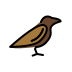
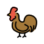

1Laute und Buchstaben
1.1Das Alphabet und die fünf Vokale · 🌱 Samen
← Erklärung: Gramática A · 1.1
1Eine Taste macht den Unterschied. Welches Wort hörst du? Kreuze an. · Hören
a
peso
piso
Gewicht / Wohnungb
casa
cosa
Haus / Sachec
mesa
misa
Tisch / Messed
dedo
dado
Finger / Würfele
luna
lana
Mond / Wollef
pelo
palo
Haar / StockLösung
Gesprochen wird: a piso · b casa · c mesa · d dado · e luna · f pelo
2Wer oder was wird hier buchstabiert? Schreib das Wort.Erkennen
Beispiel: ce, a, ese, a → casa
- pe, i, ele, a, erre
- eme, a, de, erre, i, de
- jota, a, eme, o con tilde, ene
- e, ese, pe, a, eñe, a
Lösung
a Pilar · b Madrid · c jamón · d España
3Beim Tierarzt. Dani meldet seinen Hund an. Hör zu und ergänze. · Hören
Recepción
¿Nombre del perro, por favor?
Dani
Tofu. , o, , .
Recepción
¿Tofu? ¿Como el tofu?
Dani
Sí. Es vegetariano.
Recepción
¿Y su nombre?
Dani
Dani. , a, , i.
Lösung
Te · efe · u · De · ene
4Und du? Buchstabier deinen Namen und deine Stadt auf Spanisch.Frei
Lösung
Zum Beispiel: Anna: a, ene, ene, a. Köln: ka, o con diéresis, ele, ene. Die Pünktchen über ö, ü, ä heißen diéresis.
5Der Klassiker vom Schulhof. Sprich nach, erst langsam, dann schnell. · Sprechen
A, e, i, o, u, ¡el burro sabe más que tú!A, e, i, o, u, der Esel weiß mehr als du!
Lösung
Keine feste Lösung.
1.2Doppelvokale · 🌱 Samen
← Erklärung: Gramática A · 1.2
1Paar oder kein Paar? Welches Wort hörst du? Kreuze an. · Hören
a
bueno
bono
gut / Gutscheinb
suelo
solo
Boden / alleinc
nieto
neto
Enkel / nettod
causa
cosa
Grund / Sachee
veinte
vente
zwanzig / komm herf
hay
ahí
es gibt / dortLösung
Gesprochen wird: a bueno · b solo · c nieto · d cosa · e veinte · f ahí
2Lucías Frühstück. Hör zu: Tanzt das Vokalpaar eng (E, eine Silbe) oder allein (A, zwei Silben)? Schreib E oder A. · Erkennen
Buenos días. Son las seis. Lucía desayuna en el bar de Raúl: un café y un vaso de agua. Son dos euros. Y a la una, ¡paella!
Lösung
Buenos E · días A · seis E · Lucía A · Raúl A · agua E · euros E · paella Adías, Lucía, Raúl: Der Akzent macht i und u stark, das Paar trennt sich. paella: zwei Starke, a und e.
3Klatsch die Silben und schreib sie mit Bindestrichen.Bilden
Beispiel: siete → sie-te
- ciudad
- Raúl
- Mario
Lösung
a ciu-dad · b Ra-úl · c Ma-rioMario hat zwei Silben, María drei: Ma-rí-a. Den Unterschied macht der Akzent.
4Auf dem Markt. Jens, Lucías Kollege aus Hamburg, kauft Obst. Hör zu und ergänze. · Hören
Frutero
¡ días! ¿Qué le pongo?
Jens
Un kilo de naranjas y plátanos.
Frutero
Son euros con .
Jens
¿Nueve «oiros»?
Frutero
No, hombre: nueve . E-u.
Lösung
Buenos · seis · nueve · veinte · euros
5Sprich nach: Jedes Paar in einem Zug, jedes ahí in zwei. · Sprechen
Ahí hay seis euros. ¡Ay, no: hay nueve!Da liegen sechs Euro. Ach nein, es sind neun!
Lösung
Keine feste Lösung.
1.3C und Z · 🌱 Samen
← Erklärung: Gramática A · 1.3
1k, s oder th? Welches Wort hörst du? Kreuze an. · Hören
a
casa
caza
Haus / Jagdb
cien
quien
hundert / werc
roca
rosa
Fels / Rosed
cola
sola
Schlange / alleine
taco
taza
Taco / Tassef
cita
quita
Verabredung / nimmt wegLösung
Gesprochen wird: a caza · b quien · c rosa · d cola · e taza · f cita
2Freitagabend bei Pilar. Wie klingt das c, z oder qu im unterstrichenen Wort? Schreib TH (wie engl. „think“) oder K.Erkennen
Cena en casa de Pilar: queso, croquetas y una cerveza muy fría. Nico toma un zumo azul. ¿Un zumo azul? Sí. Nico tiene cuatro años y cinco dinosaurios.
Lösung
Cena TH · casa K · queso K · croquetas K · cerveza TH · zumo TH · azul TH · cuatro K · cinco TH
3c, z oder qu? Hör zu und ergänze. · Hören
umo · ena · eso · aul · inco · ince · plaa · oche · Luía · taa · ervea
Lösung
z · c · qu · z · c · qu · z · c · c · z · c · zDen th-Laut hörst du, aber nicht, ob er c oder z geschrieben wird: cinco oder „zinco“? Vor e und i ist c die sichere Wahl, vor a, o, u steht z.
4Auf der Terrasse. Dani und Lucía bestellen. Hör zu und ergänze. · Hören
Camarero
¡Buenas! ¿Qué les pongo?
Dani
Una , por favor.
Lucía
Para mí, un de naranja.
Dani
Y unas y un poco de .
Camarero
Muy bien. Son euros.
Lösung
cerveza · zumo · croquetas · queso · doce
5Erst langsam, dann schnell. Kein einziges „ts“! · Sprechen
Cecilia come cinco cerezas y un queso en la plaza de Zaragoza.Cecilia isst auf dem Platz in Zaragoza fünf Kirschen und einen Käse.
Lösung
Keine feste Lösung.
1.4G und J · 🌱 Samen
← Erklärung: Gramática A · 1.4
1Garten oder Bach? Welches Wort hörst du? Kreuze an. · Hören
a
gota
jota
Tropfen / der Buchstabe Jb
higo
hijo
Feige / Sohnc
mago
majo
Zauberer / nettd
paga
paja
zahlt / Strohe
trago
trajo
Schluck / brachteLösung
Gesprochen wird: a jota · b higo · c majo · d paga · e trajo
2Garten oder Bach? Sortiere nach dem Klang.Erkennen
gatogenteguerrajamónguitarragirasolgorilaviaje
g wie in „Garten“
ch wie in „Bach“
Lösung
g wie in „Garten“: gato, guerra, guitarra, gorila
ch wie in „Bach“: gente, jamón, girasol, viaje
ch wie in „Bach“: gente, jamón, girasol, viaje
3u oder ü? Weck das u nur, wenn es sprechen soll.Bilden
pingino
gerra
vergenza
gitarra
cigeña
Migel
lingística
hamburgesa
aga
Lösung
pingüino, guerra, vergüenza, guitarra, cigüeña, Miguel, lingüística, hamburguesa, aguaBei agua warst du vielleicht unsicher: Vor a und o spricht das u immer mit, deshalb braucht es dort nie Punkte.
4Pilars Einkaufszettel. g oder j? Hör zu und ergänze. · Hören
naranas · ao · lechua · uisantes · pipas de irasol · ¡y amón para Nico!
Lösung
j · j · g · g · g · jVor a, o, u verrät dir das Ohr den Buchstaben. Bei girasol hörst du keinen Unterschied zu j – da hilft nur das Auge.
5Zungenbrecher. Sag ihn dreimal, jedes Mal ein bisschen schneller. · Sprechen
Juan junta juncos junto a la zanja.Juan sammelt Binsen neben dem Graben.
Lösung
Keine feste Lösung.
1.5R und RR · 🌱 Samen
← Erklärung: Gramática A · 1.5
1Tippen oder rollen? Welches Wort hörst du? Kreuze an. · Hören
a
pero
perro
aber / Hundb
caro
carro
teuer / Karrenc
para
parra
für / Weinrebed
cero
cerro
null / Hügele
ahora
ahorra
jetzt / spartf
coro
corro
Chor / ich renneLösung
Gesprochen wird: a perro · b caro · c parra · d cero · e ahorra · f coro
2Rafas Hund. Hör zu: Wird das r getippt (T) oder gerollt (R)? Schreib T oder R. · Hören
Rafa, el jefe de Lucía, tiene un perro enorme. Se llama Pirata. Come arroz y duerme en la oficina. Pero cuando ve a Enrique, el cartero, hace: ¡grrr!
Lösung
Rafa R · perro R · Pirata T · arroz R · Pero T · Enrique R · grrr REnrique schreibt man mit einem r, gerollt wird trotzdem: Nach n rollt das r immer.
3r oder rr? Die Übersetzung hilft dir.Bilden
peo Hund
peo aber
aoz Reis
toe Turm
baio Stadtviertel
paa für
Lösung
perro Hund, pero aber, arroz Reis, torre Turm, barrio Stadtviertel, para für
4Im Park. Nico hat einen Plan. Hör zu und ergänze. · Hören
Nico
¡Abuela, mira! ¡Un !
Pilar
Es Tofu, el perro de Dani.
Nico
¡Yo quiero un perro! ¡!
Pilar
, Nico, tu mamá…
Nico
¡Un perro grande y , como un T-!
Lösung
perro · Ahora · Pero · rojo · Rex
5Der berühmteste Zungenbrecher Spaniens. Roll, so gut du kannst! · Sprechen
Erre con erre, cigarro; erre con erre, barril. Rápido ruedan los carros cargados de azúcar del ferrocarril.R mit r: Zigarre, r mit r: Fass. Schnell rollen die Wagen, beladen mit Zucker von der Eisenbahn.
Lösung
Keine feste Lösung.
1.6B, V und das weiche D · 🌱 Samen
← Erklärung: Gramática A · 1.6
1Welches Wort hörst du? Achtung, das weiche d klingt fast wie ein getipptes r. · Hören
a
beso
peso
Kuss / Gewichtb
vino
pino
Wein / Kieferc
boca
poca
Mund / wenigd
todo
toro
alles / Stiere
cada
cara
jede / Gesichtf
dos
tos
zwei / HustenLösung
Gesprochen wird: a beso · b vino · c poca · d toro · e cada · f tos
2Hart oder auf dem Sofa? Sortiere nach dem Klang des d.Erkennen
Daninadadíatodocuandocadafaldaadiós
hart wie in „Dach“
weich wie engl. „this“
Lösung
hart wie in „Dach“: Dani, día, cuando, falda
weich wie engl. „this“: nada, todo, cada, adiósNach n und l bleibt das d hart: cuando, falda.
weich wie engl. „this“: nada, todo, cada, adiósNach n und l bleibt das d hart: cuando, falda.
3b oder v? Denk an m und n.Bilden
tamién
inierno
homre
eniar
camio
initar
Lösung
también, invierno, hombre, enviar, cambio, invitar
4Postkarte aus Valencia. b oder v? Hör ruhig zu – helfen wird es dir nicht. · Schreiben
¡Hola, mamá! Un eso desde alencia. Hace uen tiempo, el ino es ueno y arato. Dani ebe agua. Yo, no. ¡Hasta el sáado! Lucía
Lösung
b · V · b · v · b · b · b · bb und v klingen gleich, also musst du die Schreibung lernen. Eselsbrücke: beber (trinken) und bueno – b wie „Bier“ und „besser“.
5Sprich nach. Jedes v ist ein b, jedes b zwischen Vokalen ein weiches. · Sprechen
Una vaca vaga viaja en la baca de un coche viejo.Eine faule Kuh reist auf dem Dachgepäckträger eines alten Autos.
Lösung
Keine feste Lösung.
1.7LL, Y, Ñ, H und QU · 🌱 Samen
← Erklärung: Gramática A · 1.7
1Mit Welle oder ohne? Welches Wort hörst du? Kreuze an. · Hören
a
año
ano
Jahr / Afterb
cana
caña
graues Haar / kleines Bierc
pena
peña
Kummer / Cliqued
mono
moño
Affe / Haarknotene
pollo
polo
Hähnchen / Poloshirtf
olla
ola
Kochtopf / WelleLösung
Gesprochen wird: a año · b caña · c pena · d moño · e pollo · f ola
2Kostüm ab! Wie klingt das Wort? Ordne die deutsche Lautschrift zu.Erkennen
ahola
1„tschiko“
bqueso
2„keso“
ccalle
3„ninjo“
dniño
4„oi“
echico
5„ola“
fhoy
6„kaje“
Lösung
a 5 · b 2 · c 6 · d 3 · e 1 · f 4
3Nicos Geburtstagskarte. ñ, ll, h oder qu? Hör zu und ergänze. · Hören
¡Feliz cumpleaos, Nico! oy tienes cuatro aos. Maana ega tu regalo: un dinosaurio e ruge. ¡Un beso muy fuerte! Tu tía Lucía
Lösung
ñ · H · ñ · ñ · ll · quDas h in hoy hörst du nicht, und llega könnte man nach dem Klang auch mit y schreiben. Solche Wörter lernst du mit den Augen.
4Dein Neujahrsgruß. Schreib eine kurze Nachricht an jemanden, den du magst – mit ñ!Frei
Lösung
Zum Beispiel: ¡Feliz año nuevo, mamá! Un beso muy fuerte. Hast du die Welle auf dem ñ gesetzt?
5Ein Zungenbrecher voller ñ. Sprich nach. · Sprechen
Ñoño Yáñez come ñame por las mañanas con el niño.Ñoño Yáñez isst morgens mit dem Kind Yamswurzel.
Lösung
Keine feste Lösung.
1.8Betonung und Akzent · 🌱 Samen
← Erklärung: Gramática A · 1.8
1Wo liegt die Betonung? Welches Wort hörst du? Kreuze an. · Hören
a
papa
papá
Papst / Papab
hablo
habló
ich spreche / er sprachc
esta
está
diese / istd
ingles
inglés
Leisten / Englische
secretaria
secretaría
Sekretärin / Sekretariatf
tomo
tomó
ich nehme / er nahmLösung
Gesprochen wird: a papá · b hablo · c está · d inglés · e secretaria · f tomo
2Ohne Akzent geht es nach dem Wortende. Welche Silbe ist betont?Erkennen
casaMadridluneshablarCarmenpapelzapatoPilar
die vorletzte
die letzte
Lösung
die vorletzte: casa, lunes, Carmen, zapato
die letzte: Madrid, hablar, papel, Pilar
die letzte: Madrid, hablar, papel, Pilar
3Akzent oder nicht? Schreib den Vokal – mit Akzent, wenn er nötig ist.Entscheiden
caf(e)
m(u)sica
m(o)vil
l(u)nes
tel(e)fono
jam(o)n
Pil(a)r
c(a)sa
l(a)piz
Lösung
café, música, móvil, lunes, teléfono, jamón, Pilar, casa, lápizlunes, Pilar, casa folgen der Regel – kein Akzent. jamón endet auf n, ist aber hinten betont: Akzent. lápiz, móvil enden auf Konsonant, sind aber vorn betont: Akzent.
4Mit oder ohne Akzent? Unterstreiche.Entscheiden
- ¿Es (tu / tú) móvil? Ist das dein Handy?
- (Tu / Tú) eres Dani, ¿no? Du bist Dani, oder?
- (Él / El) es Rafa, mi jefe. Er ist Rafa, mein Chef.
- ¿Dónde (esta / está) Nico? Wo ist Nico?
Lösung
a tu · b Tú · c Él · d está
5Sprechübung. Klopf bei jeder betonten Silbe auf den Tisch. · Sprechen
Mi papá toma café en el sofá y escucha música en el móvil.Mein Papa trinkt Kaffee auf dem Sofa und hört Musik auf dem Handy.
Lösung
Keine feste Lösung.
1.9Satzmelodie und ¿…? ¡…! · 🌱 Samen
← Erklärung: Gramática A · 1.9
1Frage oder Aussage? Hör auf die Melodie und kreuze an. · Hören
a
Es tarde.
¿Es tarde?
Es ist spät.b
Dani está aquí.
¿Dani está aquí?
Dani ist hier.c
Hay café.
¿Hay café?
Es gibt Kaffee.d
Nico duerme.
¿Nico duerme?
Nico schläft.Lösung
Gesprochen wird: a ¿Es tarde? · b Dani está aquí. · c ¿Hay café? · d Nico duerme.
2Die Überraschung. Hör zu und setz die Zeichen: ¿ ? ¡ ! oder Punkt. · Hören
Pilar
Hola, hija Quién es ese chico
Lucía
Es Dani
Pilar
Dani Tienes novio
Nico
Tiene novio Tiene novio
Lösung
¡ · ! · ¿ · ? · . · ¿ · ? · ¿ · ? · ¡ · ! · ¡ · !Lucía spricht ruhig und fallend: eine Aussage, also ein Punkt. Pilars ¿Dani? steigt – sie kann es nicht glauben.
3Was passt? Lies die linke Seite laut – mit der richtigen Melodie.Erkennen
a¿Tienes hambre?
1¡Gracias!
b¿Dónde está Nico?
2Mamá… sí.
c¡Feliz cumpleaños!
3Sí, mucha.
d¿Tienes novio?
4Debajo de la mesa.
Lösung
a 3 · b 4 · c 1 · d 2
4Wie sagst du das auf Spanisch? Vergiss die Zeichen vorne nicht.Übersetzen
- Hast du Hunger?
- Was für eine Überraschung!
- Lucía, hast du kurz Zeit?
Lösung
a ¿Tienes hambre?
b ¡Qué sorpresa!
c Lucía, ¿tienes un momento?
b ¡Qué sorpresa!
c Lucía, ¿tienes un momento?
5Ein Satz, drei Melodien. Sprich nach. · Sprechen
Nico duerme. ¿Nico duerme? ¡Nico duerme!Nico schläft. Schläft Nico? Nico schläft (endlich)!
Lösung
Keine feste Lösung.
2Substantive und Artikel
2.1Männlich und weiblich · 🌱 Samen
← Erklärung: Gramática A · 2.1
1Nico räumt auf. Wohin gehört jedes Wort: el oder la?Erkennen
viajeverdaddíamanocervezamapafotoproblema
el
la
Lösung
el: viaje, día, mapa, problema
la: verdad, mano, foto, cervezaDie Rebellen: el día, el mapa, el problema sind männlich trotz -a; la mano, la foto sind weiblich trotz -o.
la: verdad, mano, foto, cervezaDie Rebellen: el día, el mapa, el problema sind männlich trotz -a; la mano, la foto sind weiblich trotz -o.
2Lucías Wohnung nach der Überschwemmung. Was passt? Unterstreiche.Entscheiden
- ¿Dónde está (el / la) mapa?
- (El / La) agua está muy fría.
- (El / La) foto de Nico está en el sofá.
- (El / La) problema es (el / la) sofá.
- (El / La) mano de Dani está fría.
Lösung
a el · b El · c La · d El, el · e Lab: agua ist weiblich, aber vor betontem a- steht el. Das Adjektiv bleibt weiblich: fría.
3Ein Beruf, zwei Menschen. Schreib die weibliche Form.Bilden
el camarero – la
el profesor – la
el jefe – la
el estudiante – la
el turista – la
el médico – la
Lösung
el camarero – la camarera, el profesor – la profesora, el jefe – la jefa, el estudiante – la estudiante, el turista – la turista, el médico – la médicaestudiante und turista bleiben gleich, nur der Artikel zeigt das Geschlecht.
4Wie sagst du das auf Spanisch?Übersetzen
- Das Problem ist nicht die Wohnung. Das Problem ist die Stadt.
- Das Wasser in Madrid ist gut.
Lösung
a El problema no es el piso. El problema es la ciudad.
b El agua de Madrid es buena.b: el agua, aber buena – das Wort ist weiblich, nur der Artikel ist ein Rebell.
b El agua de Madrid es buena.b: el agua, aber buena – das Wort ist weiblich, nur der Artikel ist ein Rebell.
5Schau dich um. Schreib sechs Dinge, die du gerade siehst – mit el oder la.Frei
Lösung
Zum Beispiel: el móvil, la mesa, el ordenador, la ventana, el café, la lámpara. Prüf im Wörterbuch, ob dein Artikel stimmt.
2.2Der Plural · 🌱 Samen
← Erklärung: Gramática A · 2.2
1Was kommt dran? Sortiere nach der Pluralendung.Erkennen
barcasalunesciudadcafécrisismóvilcochecumpleaños
+ s
+ es
bleibt gleich
Lösung
+ s: casa, café, coche
+ es: bar, ciudad, móvil
bleibt gleich: lunes, crisis, cumpleaños
+ es: bar, ciudad, móvil
bleibt gleich: lunes, crisis, cumpleaños
2Aus eins mach zwei. Schreib den Plural.Bilden
el lápiz → los
la canción → las
el joven → los
el autobús → los
el examen → los
el pez → los
Lösung
el lápiz → los lápices, la canción → las canciones, el joven → los jóvenes, el autobús → los autobuses, el examen → los exámenes, el pez → los pecesDie Betonung bleibt auf derselben Silbe. Deshalb verlieren canciones, autobuses die Tilde, und jóvenes, exámenes bekommen eine.
3Nicos Geburtstag bei Pilar. Setz den Plural ein. · Bilden
En la fiesta de Nico hay seis (niño), tres (pastel), veinte (globo) y dos (dinosaurio) de plástico. En la mesa hay (zumo) de naranja y muchos (lápiz) de colores. Al final, las (pared) de Pilar ya no son blancas.
Lösung
niños · pasteles · globos · dinosaurios · zumos · lápices · paredes
4Wie sagst du das auf Spanisch?Übersetzen
- Die Leute in Madrid sind sehr nett.
- Lucías Eltern sind in Sevilla.
Lösung
a La gente de Madrid es muy simpática.
b Los padres de Lucía están en Sevilla.a: la gente ist Singular, also es und simpática.
b Los padres de Lucía están en Sevilla.a: la gente ist Singular, also es und simpática.
5Was hast du doppelt oder dreifach? Schreib fünf Dinge mit Zahl.Frei
Lösung
Zum Beispiel: dos móviles, tres bolígrafos, cinco tazas, dos ordenadores, mil problemas.
2.3Bestimmter und unbestimmter Artikel · 🌱 Samen
← Erklärung: Gramática A · 2.3
1Lucías erster Tag im Büro. Ist das Ding neu (N) oder schon bekannt (B)? · Erkennen
En la oficina hay un jefe, una máquina de café y un gato. El jefe es simpático. La máquina de café está rota. ¿Y el gato? El gato es el jefe de verdad.
Lösung
un N · una N · un N · El B · La B · el B · El B
2Was passt? Unterstreiche. (— heißt: kein Artikel)Entscheiden
- Me gusta (el / —) chocolate.
- Hay (el / un) supermercado en la esquina.
- Perdón, ¿dónde está (el / un) baño?
- (Los / —) lunes son horribles.
Lösung
a el · b un · c el · d Losa, d: Was allgemein gilt, bekommt im Spanischen den Artikel – anders als im Deutschen. c: Im Restaurant gibt es das Bad – das eine, das alle kennen.
3Pilar ruft an. Setz el, la, un oder una ein. · Bilden
la pantalla der Bildschirm · el fondo de pantalla das Hintergrundbild
Pilar
Lucía, tengo problema. ordenador está raro.
Lucía
¿Raro? ¿Qué pasa, mamá?
Pilar
Hay foto en pantalla. ¡De perro con gafas!
Lucía
Mamá, perro con gafas es fondo de pantalla. ¡Es Tofu!
Lösung
un · El · una · la · un · el · el
4Wie sagst du das auf Spanisch?Übersetzen
- Ich mag Kaffee, aber nicht den Kaffee im Büro.
- Im Büro ist eine Katze.
Lösung
a Me gusta el café, pero no el café de la oficina.
b Hay un gato en la oficina.
b Hay un gato en la oficina.
5Deine Straße. Was gibt es dort? Und wie ist es?Frei
Erst Hay un …, hay una …, dann El … es …, la … es …
Lösung
Zum Beispiel: En mi calle hay un bar y una farmacia. El bar es barato y la farmacia es muy pequeña.
2.4al und del · 🌱 Samen
← Erklärung: Gramática A · 2.4
1Verschmelzen oder nicht? Achte auf das Genus.Entscheiden
(a) parque
(a) estación
(de) coche
(de) vecinos
(a) baño
(de) ciudad
(de) día
(a) agua
(a) playa
Lösung
(a) al parque, (a) a la estación, (de) del coche, (de) de los vecinos, (a) al baño, (de) de la ciudad, (de) del día, (a) al agua, (a) a la playadel día: día ist ein Rebell, also männlich. al agua: agua bekommt el (Gramática A · 2.1), also verschmilzt es auch.
2Danis Samstag. Setz al, del, a la, de la … ein. · Erzählen
la nevera der Kühlschrank
De la cama (a) sofá. (de) sofá (a) nevera. (de) nevera (a) sofá otra vez. A las ocho: (de) sofá (a) bar (de) barrio. ¿Y a las doce? (de) bar (a) cama. ¡Qué sábado!
Lösung
al · Del · a la · De la · al · del · al · del · Del · a la
3Mit oder ohne Verschmelzung? Unterstreiche.Entscheiden
- Es el móvil (de el / del) jefe.
- El regalo es (de él / del). No es de Pilar.
- Pilar está en la puerta (de el / del) supermercado.
- Mañana voy (al / a) casa de mi madre.
Lösung
a del · b de él · c del · d ab: él mit Akzent ist „er“ – da verschmilzt nichts. d: casa hat hier keinen Artikel, also bleibt a allein.
4Wie sagst du das auf Spanisch?Übersetzen
- Das Handy vom Chef ist im Wasser.
- Wo ist die Bushaltestelle?
- Von Montag bis Freitag: von der Arbeit nach Hause.
Lösung
a El móvil del jefe está en el agua.
b ¿Dónde está la parada del autobús?
c De lunes a viernes: del trabajo a casa.
b ¿Dónde está la parada del autobús?
c De lunes a viernes: del trabajo a casa.
5Dein Samstag in Stationen – wie bei Dani.Frei
Del … al …, de la … a la …
Lösung
Zum Beispiel: De la cama a la ducha. De la ducha al mercado. Del mercado al parque, y del parque al cine.
2.5Wann kein Artikel steht · 🌱 Samen
← Erklärung: Gramática A · 2.5
1Artikel oder nicht? Unterstreiche. (— heißt: kein Artikel)Entscheiden
- Lucía es (una / —) diseñadora.
- Lucía es (una / —) diseñadora fantástica.
- (Un / —) otro café, por favor.
- Son (las / —) tres y Dani no está.
- (El / —) lunes hay reunión.
- Pilar: «¡Qué (una / —) sorpresa!»
Lösung
a — · b una · c — · d las · e El · f —a/b: Das Etikett allein braucht keinen Artikel. Kommt eine Beschreibung dazu (fantástica), kehrt una zurück. e: el lunes = am Montag.
2Mehr erzählen: Mach aus dem Etikett eine Beschreibung.Bilden
Beispiel: Rafa es jefe. (horrible) → Rafa es un jefe horrible.
- Pilar es abuela. (muy moderna)
- Lucía es diseñadora. (genial)
- Doña Carmen es vecina. (muy curiosa)
Lösung
a Pilar es una abuela muy moderna. · b Lucía es una diseñadora genial. · c Doña Carmen es una vecina muy curiosa.
3Wie sagst du das auf Spanisch?Übersetzen
- Noch einen Kaffee, bitte.
- Hast du ein Auto?
- Am Montag ist Lucía in Sevilla.
- Es ist ein Uhr. Was für ein Tag!
Lösung
a Otro café, por favor.
b ¿Tienes coche?
c El lunes Lucía está en Sevilla.
d Es la una. ¡Qué día!
b ¿Tienes coche?
c El lunes Lucía está en Sevilla.
d Es la una. ¡Qué día!
4Stell dich und zwei Menschen vor: erst das Etikett, dann mehr.Frei
Lösung
Zum Beispiel: Soy ingeniero. Soy un ingeniero con mucho café. Mi hermana es médica. Es una médica muy buena.
3Adjektive
3.1Angleichung · 🌱 Samen
← Erklärung: Gramática A · 3.1
1Pilar besichtigt Lucías neue Wohnung. Was passt? Unterstreiche.Entscheiden
- La cocina es muy (pequeño / pequeña).
- Los vecinos son (simpáticos / simpáticas).
- Las ventanas son (grande / grandes).
- El agua del grifo está (frío / fría).
- Y el problema es (enorme / enorma): ¡no hay ascensor!
Lösung
a pequeña · b simpáticos · c grandes · d fría · e enormed: agua ist weiblich, auch wenn el davorsteht. e: Adjektive auf -e haben keine weibliche Form.
2Das Chamäleon. Setz die richtige Form ein.Bilden
una chica (alemán)
dos coches (azul)
una camisa (verde)
unos niños (feliz)
las gafas (negro)
el día (largo)
Lösung
una chica alemana, dos coches azules, una camisa verde, unos niños felices, las gafas negras, el día largoalemana: Die Tilde fällt weg, weil die Betonung gleich bleibt. el día largo: día ist männlich (Gramática A · 2.1).
3Die Hochzeit von Marta. Wer trägt was? · Bilden
Lucía tiene un vestido (rojo), unos zapatos (rojo) y una chaqueta (rojo). Dani tiene una camisa (blanco), unos pantalones (gris) y unos calcetines (amarillo) – de Pilar, claro. Nico tiene una camiseta (verde) con un dinosaurio (enorme).
Lösung
rojo · rojos · roja · blanca · grises · amarillos · verde · enorme
4Wie sagst du das auf Spanisch?Übersetzen
- Die Wohnung ist klein, aber die Küche ist groß.
- Lucía und Dani sind müde.
Lösung
a El piso es pequeño, pero la cocina es grande.
b Lucía y Dani están cansados.
b Lucía y Dani están cansados.
5Was ist gerade in deinem Kühlschrank? Beschreib vier Dinge.Frei
Hay una cerveza fría, unos tomates …
Lösung
Zum Beispiel: Hay una cerveza fría, unos tomates rojos, un queso francés y dos yogures naturales.
3.2Vor oder nach dem Nomen · 🌿 Stamm
← Erklärung: Gramática A · 3.2
1Lucías erster Tag in der neuen Firma. Was ist richtig? Unterstreiche.Entscheiden
- Hoy es mi (primer día / primero día) en la oficina.
- La oficina está en la (tercer planta / tercera planta).
- Rafa es (un gran jefe / un grande jefe).
- Tiene (un rojo coche / un coche rojo).
- ¡Qué (mal suerte / mala suerte): no hay café!
Lösung
a primer día · b tercera planta · c un gran jefe · d un coche rojo · e mala suerteb, e: Gekürzt wird nur vor einem männlichen Nomen. planta und suerte sind weiblich: tercera, mala. Nur gran gilt für beide.
2Was ist gemeint? Ordne zu.Erkennen
aun gran hombre
1eine Freundin von 85 Jahren
bun hombre grande
2Der arme Dani!
cuna vieja amiga
3ein großer, kräftiger Mann
duna amiga vieja
4eine Freundin seit vielen Jahren
e¡Pobre Dani!
5ein großartiger Mann
Lösung
a 5 · b 3 · c 4 · d 1 · e 2
3Mach es emotional: Das Adjektiv wandert nach vorn.Bilden
Beispiel: un amigo bueno → un buen amigo
- una idea buena
- un momento malo
- una fiesta grande
Lösung
a una buena idea · b un mal momento · c una gran fiestaNur grande wird auch vor weiblichen Nomen kurz: una gran fiesta, aber una buena idea.
4Wie sagst du das auf Spanisch?Übersetzen
- Das ist eine gute Idee!
- Pilar ist eine alte Freundin von Doña Carmen.
Lösung
a ¡Es una buena idea!
b Pilar es una vieja amiga de doña Carmen.b: Beides stimmt hier: Die zwei kennen sich seit Jahren – und doña Carmen ist über achtzig.
b Pilar es una vieja amiga de doña Carmen.b: Beides stimmt hier: Die zwei kennen sich seit Jahren – und doña Carmen ist über achtzig.
5Wer ist für dich ein gran hombre oder eine gran mujer? Warum?Frei
Lösung
Zum Beispiel: Mi abuela es una gran mujer. Es muy valiente y tiene un buen corazón.
3.3Vergleichen · 🌿 Stamm
← Erklärung: Gramática A · 3.3
1Vergleiche. (+ mehr, − weniger, = gleich)Bilden
Beispiel: el taxi / el metro: caro (+) → El taxi es más caro que el metro.
- Dani / Lucía: tranquilo (+)
- la cerveza / el agua: sano (−)
- Nico / Tofu: rápido (=)
- la paella de Dani / la de Pilar: bueno (+)
Lösung
a Dani es más tranquilo que Lucía. · b La cerveza es menos sana que el agua. · c Nico es tan rápido como Tofu. · d La paella de Dani es mejor que la de Pilar.b: Das Adjektiv passt sich an: la cerveza → sana. d: nie más bueno, sondern mejor.
2Was passt? Unterstreiche.Entscheiden
- Lucía es tan alta (que / como) Marta.
- El hotel nuevo es (más bueno / mejor) que el viejo.
- Rafa tiene más (que / de) cincuenta años.
- El hermano (más grande / mayor) de Dani tiene cuarenta años.
- Es el peor día (de / en) mi vida.
Lösung
a como · b mejor · c de · d mayor · e dec: Mit Zahlen: más de. d: Beim Alter: mayor. e: „meines Lebens“ = de mi vida.
3Pilar vergleicht. Ergänze. · Bilden
Pilar
Hija, el piso de tu hermana es (+) grande tu piso.
Lucía
Sí, mamá, pero mi barrio es (bueno, +).
Pilar
Y tu sobrino es el niño (+) guapo (de + el) mundo.
Lucía
En eso, mamá, estamos de acuerdo.
Lösung
más · que · mejor · más · del
4Wie sagst du das auf Spanisch?Übersetzen
- Das ist die schlechteste Pizza von Madrid.
- Meine Schwester ist älter als ich.
Lösung
a Es la peor pizza de Madrid.
b Mi hermana es mayor que yo.
b Mi hermana es mayor que yo.
5Du und ein Mensch aus deiner Familie: drei Vergleiche.Frei
Lösung
Zum Beispiel: Mi hermano es más alto que yo. Yo soy más rápida que él. Pero él es mejor en la cocina.
3.4Die Endung -ísimo · 🌿 Stamm
← Erklärung: Gramática A · 3.4
1Dreh den Regler auf. Schreib die -ísimo-Form.Bilden
caro →
fácil →
rico →
largo →
rápido →
guapas →
Lösung
caro → carísimo, fácil → facilísimo, rico → riquísimo, largo → larguísimo, rápido → rapidísimo, guapas → guapísimasriquísimo, larguísimo: Mit qu und gu bleibt der Klang von rico und largo.
2Pilar sagt muy. Lucía übertreibt.Bilden
Beispiel: El piso es muy caro. → ¡Es carísimo!
- La película es muy larga.
- Los tomates están muy ricos.
- Nico está muy cansado.
Lösung
a ¡Es larguísima! · b ¡Están riquísimos! · c ¡Está cansadísimo!
3Eine Karte aus Cádiz. Lucía übertreibt – setz die -ísimo-Form ein. · Erzählen
¡Hola, mamá! Cádiz es (bonito). El hotel es (pequeño), pero la playa está (cerca). El pescado está (rico) y el vino es (barato). Dani está (contento) y Tofu, (gordo). Besos, Lucía. P. D.: El camarero está (bueno).
Lösung
bonitísimo · pequeñísimo · cerquísima · riquísimo · baratísimo · contentísimo · gordísimo · buenísimocerquísima: Auch manche Adverbien steigern so, und c → qu.
4Wie sagst du das auf Spanisch?Übersetzen
- Tausend Dank!
- Ich bin todmüde.
Lösung
a ¡Muchísimas gracias!
b Estoy cansadísimo. / Estoy cansadísima.
b Estoy cansadísimo. / Estoy cansadísima.
5Bewerte ein Restaurant, ein Hotel oder einen Film – mit drei -ísimo-Formen.Frei
Lösung
Zum Beispiel: El restaurante es pequeñísimo, pero la comida está buenísima y no es carísimo.
3.5muy und mucho, bien und bueno · 🌱 Samen
← Erklärung: Gramática A · 3.5
1muy oder mucho, mucha, muchos, muchas?Entscheiden
caro
dinero
gente
amigos
bien
gracias
tarde
frío
cansada
Lösung
muy caro, mucho dinero, mucha gente, muchos amigos, muy bien, muchas gracias, muy tarde, mucho frío, muy cansadamucho frío: frío ist hier ein Nomen (die Kälte), wie in Hace mucho frío.
2bien oder bueno? Unterstreiche.Entscheiden
- —¿Qué tal? —(Bien / Bueno), gracias.
- La paella está muy (buena / bien).
- Hablas español muy (bien / bueno).
- Hoy es un (bien / buen) día para la playa.
- Dani es muy (bueno / bien) con los niños.
Lösung
a Bien · b buena · c bien · d buen · e buenob: Essen schmeckt: estar bueno. e: bueno con beschreibt Dani als Mensch – ein Adjektiv.
3Pilar ruft an. Setz muy, mucho, bien oder bueno in der richtigen Form ein. · Bilden
Pilar
Hola, hija. ¿Todo ?
Lucía
Sí, mamá, bien. Pero tengo trabajo.
Pilar
¿Y Dani? ¿Es contigo?
Lucía
Sí, mamá. Dani es un chico tranquilo.
Pilar
Ya. tranquilo. Y tarde, siempre. besos a Dani.
Lösung
bien · muy · mucho · bueno · muy · Muy · muy · Muchos
4Wie sagst du das auf Spanisch?Übersetzen
- Mir geht’s sehr gut, danke.
- Die Paella ist sehr gut, aber hier sind viele Leute.
Lösung
a Estoy muy bien, gracias.
b La paella está muy buena, pero aquí hay mucha gente.
b La paella está muy buena, pero aquí hay mucha gente.
5Wie geht’s dir heute wirklich? Drei Sätze mit muy, mucho, bien oder bueno.Frei
Lösung
Zum Beispiel: Estoy bien, pero muy cansado. Tengo mucho trabajo. El café de hoy es muy bueno.
4Pronomen I
4.1Ich, du, Sie, ihr · 🌱 Samen
← Erklärung: Gramática A · 4.1
1Die Endung verrät es. Welches Pronomen passt?Erkennen
- (Nosotros / Vosotros) somos de Madrid.
- ¿(Tú / Usted) tienes hambre?
- (Ella / Yo) estoy en la oficina.
- ¿(Ellos / Vosotros) sois hermanos?
Lösung
a Nosotros · b Tú · c Yo · d VosotrosDie Verbform zeigt die Person: sois geht nur mit vosotros.
2Duzen oder siezen? Du bist in Spanien. Sortiere.Entscheiden
deine Kolleginder PolizistNico (4)doña Carmen (85)dein Bruderder König
tú
usted
Lösung
tú: deine Kollegin, Nico (4), dein Bruder
usted: der Polizist, doña Carmen (85), der KönigKollegen duzt man in Spanien fast immer. Im Zweifel: Hör hin, wie der andere dich anspricht.
usted: der Polizist, doña Carmen (85), der KönigKollegen duzt man in Spanien fast immer. Im Zweifel: Hör hin, wie der andere dich anspricht.
3Lucías Profil. Kann das Pronomen weg? Schreib W (weg) oder B (bleibt). · Entscheiden
Hola, yo soy Lucía y yo tengo 32 años. Yo soy diseñadora gráfica. Mi novio se llama Dani y él es muy tranquilo. Él siempre está relajado; yo, siempre nerviosa. ¿Y tú? ¿Cómo eres?
Lösung
yo W · yo W · Yo W · él W · Él B · yo B · tú BEin einzelnes Hola, yo soy … zur Begrüßung ist okay, aber nicht nötig. Bei Dani gegen Lucía zeigt der Finger: er so, ich so. ¿Y tú? hat kein Verb – ohne tú bliebe nichts übrig.
4Pilar fragt jetzt mehrere Leute. Mach daraus die Plural-Frage.Bilden
Beispiel: ¿Estás bien? → ¿Estáis bien?
- ¿Tienes hambre?
- Señora, ¿está usted bien?
Lösung
a ¿Tenéis hambre? · b Señoras, ¿están ustedes bien?
5Wie sagst du das auf Spanisch?Übersetzen
- Wir sind müde. – Ich nicht!
- Sind Sie Frau Ruiz?
Lösung
a Estamos cansados. —¡Yo no!
b ¿Es usted la señora Ruiz?
b ¿Es usted la señora Ruiz?
4.2Mein, dein, sein · 🌱 Samen
← Erklärung: Gramática A · 4.2
1Ein Ding oder mehrere? Unterstreiche.Erkennen
- (Mi / Mis) gafas están en el coche.
- (Nuestra / Nuestro) casa es pequeña.
- ¿Es (vuestro / vuestra) perro?
- Señor Gómez, ¿es (su / tu) maleta?
Lösung
a Mis · b Nuestra · c vuestro · d sub: casa ist weiblich – egal, wer dort wohnt. d: Herrn Gómez siezt man, also su (Ihr).
2Lucías Party. Wessen Ding? Schreib 1 (sein), 2 (ihr) oder 3 (Ihr). · Erkennen
Doña Carmen, la vecina, está en la puerta con su gato. Dani está en la cocina con su perro, Tofu. Mi madre está en el sofá con su móvil, como siempre. Y Nico está debajo de la mesa con sus dinosaurios. —Doña Carmen, ¿es su gato o es un tigre?
Lösung
su 2 · su 1 · su 2 · sus 1 · su 3Am Ende spricht Lucía doña Carmen direkt an – und siezt sie: su gato = Ihre Katze.
3Das Familienfoto. Setz mi, su, nuestro … ein. · Bilden
En la foto está (ich) familia. A la izquierda está (ich) madre con (sie) gafas de sol. Al lado está (ich) hermana con (sie) hijo Nico y (er) dinosaurios. Detrás estamos Dani y yo con Tofu, (er) perro. ¿Y el señor del sombrero? No es (wir) tío. Es un turista.
Lösung
mi · mi · sus · mi · su · sus · su · nuestrosus gafas: Plural wegen der Brille, nicht wegen Pilar. sus dinosaurios: die Dinosaurier gehören Nico.
4Wie sagst du das auf Spanisch?Übersetzen
- Mein Handy und meine Schlüssel sind im Auto.
- Ist das Ihr Koffer, Herr López?
- Unsere Nachbarn sind sehr laut.
Lösung
a Mi móvil y mis llaves están en el coche.
b ¿Es su maleta, señor López?
c Nuestros vecinos son muy ruidosos.
b ¿Es su maleta, señor López?
c Nuestros vecinos son muy ruidosos.
5Was ist auf deinem Handy-Hintergrund? Beschreib es in drei Sätzen.Frei
Nimm mi, su, nuestro …
Lösung
Zum Beispiel: Es mi perro, Bruno. Está en el sofá de mis padres. Es su sitio favorito.
4.3Dies und das · 🌱 Samen
← Erklärung: Gramática A · 4.3
1Wo ist das Ding? Unterstreiche.Entscheiden
- (in deiner Hand) (Este / Ese / Aquel) móvil es nuevo.
- (an deinem Freund) ¿Es nueva (esta / esa / aquella) camiseta?
- (ganz hinten im Laden) ¿Y (estos / esos / aquellos) zapatos?
- (Nico hält etwas Klebriges hoch) ¿Qué es (eso / ese / esa)?
Lösung
a Este · b esa · c aquellos · d esod: Lucía weiß nicht, was es ist – darum eso. Im Alltag hörst du für „dort“ auch oft ese; aquel betont: wirklich weit weg.
2Ergänze die Endung.Bilden
est pizza
es chicos
aquell casas
est piso
es llaves
aque coche
Lösung
esta pizza, esos chicos, aquellas casas, este piso, esas llaves, aquel coche
3Sonntag auf dem Rastro, dem Flohmarkt. Die Hinweise sagen, wo das Ding ist. · Entscheiden
Lucía
¡Mira, Dani! ¿Qué es (hier)?
Dani
¿(bei dir)? Es un teléfono de 1980.
Lucía
¡Es precioso! ¿Y (dort) lámpara?
Dani
¿Cuál? ¿La verde? Es horrible.
Lucía
Vale. ¿Y (hier) gafas? ¿Qué tal?
Dani
Con (bei dir) gafas eres Harry Potter.
Lucía
Perfecto. ¡Son para Nico!
Lösung
esto · Eso · aquella · estas · esas
4Alles doppelt. Setz in den Plural.Bilden
Beispiel: Este chico es mi primo. → Estos chicos son mis primos.
- Esa silla está rota.
- Aquel coche es de Rafa.
Lösung
a Esas sillas están rotas. · b Aquellos coches son de Rafa.
5Wie sagst du das auf Spanisch?Übersetzen
- Was ist das hier?
- Heute Abend habe ich keine Zeit.
Lösung
a ¿Qué es esto?
b Esta noche no tengo tiempo.
b Esta noche no tengo tiempo.
Test 1 · Kapitel 1–4
1Das spanische Alphabet hat Buchstaben.
a)26
b)27
c)29
2Der Buchstabe ñ heißt .
a)ene
b)eñe
c)enie
3Euro spricht man aus.
a)„e-u-ro“
b)„oi-ro“
4Das Wort día hat Silben.
a)eine
b)zwei
c)drei
5Bier heißt cervea.
a)z
b)s
c)c
6In cine klingt das c wie .
a)th in engl. „think“
b)k
c)ts
7Pinguin heißt pinino.
a)gu
b)gü
8In gente klingt das g wie .
a)g in „Garten“
b)ch in „Bach“
c)j in „ja“
9Hund heißt peo.
a)r
b)rr
10Das r in Rafa wird .
a)einmal getippt
b)gerollt
11Auch heißt tamién.
a)b
b)v
12Winter heißt inierno.
a)b
b)v
13Jahr heißt ao.
a)n
b)ñ
14In hola spricht man das h .
a)wie in „Haus“
b)gar nicht
15 eres mi amigo.
a)Tu
b)Tú
16Telefon heißt telfono.
a)e
b)é
17Dónde está Nico?
a)¿
b)¡
18¿Dónde está mapa de Madrid?
a)el
b)la
19En la mesa hay dos .
a)lápiz
b)lápizes
c)lápices
20En la plaza hay farmacia.
a)la
b)una
21A las cinco voy médico.
a)a el
b)al
22Mi hermano es médico.
a)un
b)—
23Las casas del pueblo son .
a)blanco
b)blancas
c)blancos
24Hoy es un día.
a)bueno
b)buen
25Madrid es más grande Sevilla.
a)que
b)como
26La paella está .
a)muy riquísima
b)riquísima
27En el bar hay gente.
a)muy
b)mucha
c)mucho
28—¿Quién tiene las llaves? —¡!
a)Yo
b)Soy
29Pilar está en el coche con gafas de sol.
a)su
b)sus
30¿Qué es ? —Un regalo para ti.
a)esto
b)este
Lösungen
1 b (1.1) · 2 b (1.1) · 3 a (1.2) · 4 b (1.2) · 5 a (1.3) · 6 a (1.3) · 7 b (1.4) · 8 b (1.4) · 9 b (1.5) · 10 b (1.5) · 11 a (1.6) · 12 b (1.6) · 13 b (1.7) · 14 b (1.7) · 15 b (1.8) · 16 b (1.8) · 17 a (1.9) · 18 a (2.1) · 19 c (2.2) · 20 b (2.3) · 21 b (2.4) · 22 b (2.5) · 23 b (3.1) · 24 b (3.2) · 25 a (3.3) · 26 b (3.4) · 27 b (3.5) · 28 a (4.1) · 29 b (4.2) · 30 a (4.3)
5Das Verb im Präsens
5.1Regelmäßige Verben auf -ar, -er, -ir · 🌱 Samen
← Erklärung: Gramática A · 5.1
1Wer ist das? Ordne die Formen den Personen zu.Erkennen
acomemos
1yo
bvives
2tú
chablan
3él, ella, usted
dbebo
4nosotros, -as
eescribís
5vosotros, -as
ftrabaja
6ellos, ellas, ustedes
Lösung
a 4 · b 2 · c 6 · d 1 · e 5 · f 3
2Ergänze die Endung.Bilden
habl(tú)
com(nosotros)
viv(vosotros)
escrib(ella)
le(yo)
llam(ellos)
beb(vosotros)
abr(nosotros)
necesit(usted)
Lösung
hablas, comemos, vivís, escribe, leo, llaman, bebéis, abrimos, necesitaAkzent nicht vergessen: bebéis, vivís.
3Pilars Sprachnachricht. Setz die Verben ein. · Bilden
Hola, hija, soy mamá. ¿Por qué no (coger) el teléfono? Bueno. Doña Carmen y yo (tomar) un café en la plaza. Ella (necesitar) un ordenador nuevo y yo no (comprender) nada de ordenadores. ¿Dani y tú (comer) conmigo el domingo? Vosotros (trabajar) demasiado. ¿Y tú (comer) bien? Yo (creer) que no. Bueno, te (llamar) luego. ¡Un beso!
Lösung
coges · tomamos · necesita · comprendo · coméis · trabajáis · comes · creo · llamoDani y tú = vosotros, darum coméis.
4Was passt? Unterstreiche.Entscheiden
- Nico y yo (leemos / leen) un libro de dinosaurios.
- ¿Vosotros (viven / vivís) en Madrid?
- Dani siempre (llega / llego) tarde.
- Mis vecinos (escuchan / escucháis) reguetón a las tres de la mañana.
- Señora Ruiz, usted (hablas / habla) muy bien alemán.
Lösung
a leemos · b vivís · c llega · d escuchan · e hablae: usted nimmt die Form von él und ella.
5Was machen sie gerade? Schreib zu jedem Bild einen Satz.Bilden
Nico
Lucía
Dani
Pilar
Lösung
Vorschläge: Nico lee un libro de dinosaurios. · Lucía trabaja con el ordenador. · Dani bebe un café. · Pilar llama a Lucía. Otra vez.
6Nicht nur Lucía: Dani auch! Schreib die Sätze für Lucía und Dani (ellos).Bilden
Beispiel: Trabajo mucho. → Trabajan mucho.
- Como en el bar de abajo.
- Vivo en el centro.
- Bebo demasiado café.
Lösung
a Comen en el bar de abajo. · b Viven en el centro. · c Beben demasiado café.
7Wie sagst du das auf Spanisch?Übersetzen
- Wir essen um drei. Und ihr?
- Sprichst du Deutsch?
- Meine Eltern wohnen in Toledo.
- Ich lerne seit März Spanisch.
Lösung
a Comemos a las tres. ¿Y vosotros?
b ¿Hablas alemán?
c Mis padres viven en Toledo.
d Aprendo español desde marzo.
b ¿Hablas alemán?
c Mis padres viven en Toledo.
d Aprendo español desde marzo.
8Dein ganz normaler Montag. Schreib vier Sätze.Frei
Wann arbeitest du, was isst und trinkst du, wen rufst du an?
Lösung
Zum Beispiel: Los lunes trabajo de ocho a cuatro. A las diez bebo un café con mis compañeros. Como en la oficina. Por la noche llamo a mi hermana.
5.2Verben, die den Stamm ändern · 🌱 Samen
← Erklärung: Gramática A · 5.2
1Welcher Vokal hat sich gedehnt? Sortiere.Erkennen
quieroduermepidocuestaempiezarepitovuelvenpiensassirve
e → ie
o → ue
e → i
Lösung
e → ie: quiero, empieza, piensas
o → ue: duerme, cuesta, vuelven
e → i: pido, repito, sirve
o → ue: duerme, cuesta, vuelven
e → i: pido, repito, sirve
2Im Stiefel oder draußen? Unterstreiche.Entscheiden
- Vosotros (dormís / duermís) mucho.
- ¿Cuánto (costa / cuesta) este bolso?
- Nico (juga / juega) con sus dinosaurios.
- Nosotros (podemos / puedemos) ir mañana.
- ¿Puedes (repetir / repitir), por favor?
Lösung
a dormís · b cuesta · c juega · d podemos · e repetirc: jugar ist der einzige mit u → ue. e: Der Infinitiv ändert sich nie.
3Im Restaurant. Dani hat Hunger, Lucía kann sich nicht entscheiden. · Bilden
Camarero
¿Qué (querer) ustedes?
Lucía
Mmm… ¿(poder) ver la carta otra vez?
Dani
Yo (pedir) el menú del día. Y de postre, tarta.
Camarero
Lo siento, la cocina (cerrar) en cinco minutos.
Dani
Entonces (pedir) ya. ¡Dos tartas!
Lucía
¿Dos? ¿Tú no (pensar) en tu dieta?
Dani
Sí. (pensar) en ella todos los días.
Lösung
quieren · Puedo · pido · cierra · pedimos · piensas · Piensopedimos: nosotros steht außerhalb des Stiefels.
4Wir auch! Mach aus yo die Form für nosotros.Bilden
Beispiel: Duermo poco. → Dormimos poco.
- Quiero pizza.
- Vuelvo a las ocho.
- Juego al pádel.
Lösung
a Queremos pizza. · b Volvemos a las ocho. · c Jugamos al pádel.
5Nico schläft bei Oma Pilar. Pilar erzählt. · Erzählen
Hoy Nico (dormir) en mi casa. Bueno, „(dormir)“… A las nueve (querer) agua. A las diez (pedir) un cuento. Yo le (contar) el cuento de la princesa. Pero él (preferir) el cuento del T-Rex. A las once (empezar) a cantar. Nosotros no (dormir) nada. Mañana Nico (volver) a su casa. Y yo (dormir) tres días.
Lösung
duerme · duerme · quiere · pide · cuento · prefiere · empieza · dormimos · vuelve · duermodormimos: nosotros steht außerhalb des Stiefels.
6Drei Sätze, die du auf Reisen brauchst.Übersetzen
- Wie viel kostet das?
- Ich verstehe nicht. Kannst du das wiederholen?
- Wir wollen die Rechnung, bitte.
Lösung
a ¿Cuánto cuesta?
b No entiendo. ¿Puedes repetir?
c Queremos la cuenta, por favor.
b No entiendo. ¿Puedes repetir?
c Queremos la cuenta, por favor.
7Was willst du, was kannst du, was verstehst du nicht? Drei Sätze.Frei
Nimm quiero, puedo, no entiendo, prefiero.
Lösung
Zum Beispiel: Quiero aprender a bailar salsa. Puedo cocinar, pero no muy bien. No entiendo a mi jefe. Prefiero los gatos.
5.3Die wichtigen Unregelmäßigen · 🌱 Samen
← Erklärung: Gramática A · 5.3
1Welcher Club? Sortiere die yo-Formen.Erkennen
tengovoycomosalgosoyhablodigodoyvivopongoestoyvengo
Go-Club
Oy-Club
ganz regelmäßig
Lösung
Go-Club: tengo, salgo, digo, pongo, vengo
Oy-Club: voy, soy, doy, estoy
ganz regelmäßig: como, hablo, vivo
Oy-Club: voy, soy, doy, estoy
ganz regelmäßig: como, hablo, vivo
2Wie heißt die yo-Form?Bilden
hacer →
poner →
salir →
traer →
venir →
dar →
saber →
ver →
conocer →
Lösung
hacer → hago, poner → pongo, salir → salgo, traer → traigo, venir → vengo, dar → doy, saber → sé, ver → veo, conocer → conozco
3Lucías Samstag. Setz die Verben ein. · Erzählen
Los sábados no (tener) prisa. (hacer) un café enorme y (poner) música. A las doce (venir) Dani, a veces a la una. Nosotros (ir) al Rastro y luego (salir) a comer. Mi madre (decir) que (tener) una vida muy tranquila. ¡Ja! Ella no (saber) nada.
Lösung
tengo · Hago · pongo · viene · vamos · salimos · dice · tengo · sabesalimos: Der Go-Club ist nur bei yo rebellisch.
4ir oder venir? Wo ist der Sprecher?Entscheiden
- —¡Nico, a la mesa! —¡Ya (voy / vengo)!
- Dani, ¿(vienes / vas) a mi fiesta el sábado?
- Mañana (voy / vengo) al médico.
- ¿(Venís / Vais) a mi casa esta noche? Hago paella.
Lösung
a voy · b vienes · c voy · d Venísb und d: Lucía lädt zu sich ein – also dorthin, wo sie ist: venir. a: Nico geht zu den anderen hin: ir.
5Freitagabend. Pilar ruft an – natürlich. · Bilden
Pilar
Hola, hija. ¿Qué (hacer)?
Lucía
Nada, mamá. (estar) en el sofá.
Pilar
¿Y por qué no (salir)? (tener) treinta y dos años.
Lucía
Los viernes no (salir). (tener) un plan.
Pilar
Pues doña Carmen y yo (ir) a bailar. ¿(venir)?
Lucía
…Vale, mamá. Ya (ir).
Lösung
haces · Estoy · sales · Tienes · salgo · Tengo · vamos · Vienes · voyLetzte Zeile: Lucía geht zu Pilar hin – also ir: voy.
6Wie sagst du das auf Spanisch?Übersetzen
- Ich habe keine Zeit.
- Was machst du heute Abend?
- Wir gehen ins Kino. Kommst du mit?
- Ich komme schon!
Lösung
a No tengo tiempo.
b ¿Qué haces esta noche?
c Vamos al cine. ¿Vienes?
d ¡Ya voy!
b ¿Qué haces esta noche?
c Vamos al cine. ¿Vienes?
d ¡Ya voy!
7Und dein Freitagabend? Vier Sätze.Frei
Nimm tengo, hago, salgo, voy …
Lösung
Zum Beispiel: Los viernes salgo del trabajo a las cinco. Voy al gimnasio. Luego hago la cena. No tengo grandes planes.
5.4Reflexive Verben · 🌱 Samen
← Erklärung: Gramática A · 5.4
1Mit Spiegel oder ohne? Unterstreiche.Entscheiden
- Lucía (se ducha / ducha) por la noche.
- Lucía (se ducha / ducha) a Tofu.
- Pilar (se despierta / despierta) a Lucía con una llamada a las siete.
- ¿Cómo (te llamas / llamas)?
- (Me llamo / Llamo) a mi madre todos los días.
Lösung
a se ducha · b ducha · c despierta · d te llamas · e Llamob, c und e: Die Handlung trifft eine andere Person – kein Spiegelwort. e: llamar anrufen, llamarse heißen.
2Setz das Spiegelwort ein.Bilden
levanto
duchas
acuesta
quedamos
levantáis
llaman
Lösung
me levanto, te duchas, se acuesta, nos quedamos, os levantáis, se llaman
3Lucías Morgen – und der von Dani. Setz die Verben ein. · Erzählen
El despertador suena a las siete. No (levantarse). A las siete y media (despertarse) de verdad. (ducharse) en tres minutos, (vestirse) en dos y (ponerse) un zapato de cada color. Dani, en cambio, (levantarse) tranquilo, (afeitarse), desayuna… y llega tarde. ¿Cómo lo hace?
Lösung
me levanto · me despierto · Me ducho · me visto · me pongo · se levanta · se afeitaAchtung Stiefel und Go-Club: me despierto (e → ie), me visto (e → i), me pongo (-go).
4Wie sagst du das auf Spanisch?Übersetzen
- Ich heiße Dani und das ist Tofu.
- Wann stehst du auf?
- Nico putzt sich nie die Zähne.
Lösung
a Me llamo Dani y este es Tofu.
b ¿A qué hora te levantas?
c Nico nunca se lava los dientes.
b ¿A qué hora te levantas?
c Nico nunca se lava los dientes.
5Dein Morgen. Schreib drei Sätze.Frei
Wann wachst du auf, stehst du auf, duschst du …?
Lösung
Zum Beispiel: Me despierto a las seis y media, pero me levanto a las siete. Me ducho, me visto y bebo un café. Me voy a las ocho.
5.5gustar und Verwandte · 🌱 Samen
← Erklärung: Gramática A · 5.5
1Ein Ding oder mehrere? Unterstreiche.Entscheiden
- Me (gusta / gustan) el chocolate.
- A Nico le (gusta / gustan) los dinosaurios.
- ¿Te (gusta / gustan) bailar?
- A Pilar le (gusta / gustan) dar consejos.
Lösung
a gusta · b gustan · c gusta · d gustac und d: Ein Tun (Infinitiv) gilt als ein Ding – also gusta, auch bei dar consejos.
2Pilar plant das Weihnachtsessen. Ergänze. · Bilden
Pilar
¿A Dani gusta el pescado?
Lucía
No, mamá. A Dani no gusta nada el pescado. Le (encantar) las croquetas.
Pilar
¿Y a ti? ¿Qué (gustar)?
Lucía
A mí gusta todo. Y a Nico le (encantar) los macarrones. Solo los macarrones.
Pilar
¡Ay! A vosotros no (gustar) mi cocina.
Lösung
le · le · encantan · te · gusta · me · encantan · os · gustaLetzte Zeile: mi cocina ist ein Ding – also gusta, auch wenn vosotros mehrere sind.
3Und den anderen? Schreib den Satz für die Person in Klammern.Bilden
Beispiel: Me gusta el fútbol. (a Dani) → A Dani le gusta el fútbol.
- Me encanta la playa. (a nosotros)
- Me molesta el ruido. (a mis vecinos)
- Me duele la cabeza. (a Lucía)
Lösung
a Nos encanta la playa. · b A mis vecinos les molesta el ruido. · c A Lucía le duele la cabeza.
4Wie sagst du das auf Spanisch?Übersetzen
- Gefällt dir meine neue Wohnung?
- Ich mag dich. (zu einer guten Freundin)
Lösung
a ¿Te gusta mi piso nuevo?
b Me caes muy bien. (Nicht: Me gustas – das wäre eine Liebeserklärung!)b: Für Sympathie sagt man me caes bien. Me gustas heißt: Ich finde dich attraktiv.
b Me caes muy bien. (Nicht: Me gustas – das wäre eine Liebeserklärung!)b: Für Sympathie sagt man me caes bien. Me gustas heißt: Ich finde dich attraktiv.
5Dein Profil für eine Dating-App: Was liebst du, was magst du, was nervt dich?Frei
Nimm me encanta(n), me gusta(n), no me gusta(n), me molesta(n).
Lösung
Zum Beispiel: Me encantan los gatos y la comida india. Me gusta bailar. No me gusta esperar. Me molesta el ruido.
6Ser, estar, hay
6.1ser oder estar · 🌱 Samen
← Erklärung: Gramática A · 6.1
1Ausweis oder Status? Sortiere.Erkennen
de Bilbaocansadoprofesoraen el metroaltonerviosolas cincode mal humorsimpáticaenfermo
Ausweis: ser
Status: estar
Lösung
Ausweis: ser: de Bilbao, profesora, alto, las cinco, simpática
Status: estar: cansado, en el metro, nervioso, de mal humor, enfermolas cinco: Die Uhrzeit steht im Ausweis – son las cinco.
Status: estar: cansado, en el metro, nervioso, de mal humor, enfermolas cinco: Die Uhrzeit steht im Ausweis – son las cinco.
2Was passt? Unterstreiche.Entscheiden
- Pilar (es / está) la madre de Lucía y (es / está) de Toledo.
- Perdone, ¿dónde (es / está) el baño?
- Hoy Nico (es / está) enfermo. Normalmente (es / está) un niño muy activo.
- ¡Qué rica (es / está) la paella, mamá!
- La reunión (es / está) a las diez, en la sala dos.
Lösung
a es, es · b está · c está, es · d está · e esb: Normalerweise ist er so – das ist Ausweis. c: Die Paella schmeckt heute gut – Status. d: Eine Besprechung ist ein Ereignis, und Ereignisse finden mit ser statt.
3Pilar ruft an. Natürlich im falschen Moment. Ergänze ser oder estar. · Situation
Pilar
Hola, cariño. ¿Cómo ?
Lucía
Hola, mamá. bien, pero en el trabajo.
Pilar
¿Y Dani? ¿ contigo?
Lucía
No, Dani en Valencia. Su hermana enferma.
Pilar
¡Ay, pobre! ¿Y cómo su hermana? ¿Simpática?
Lucía
Sí, mamá, muy simpática. Mamá, las once y en una reunión…
Pilar
¿En una reunión? ¿Y por qué contestas?
Lösung
estás · Estoy · estoy · Está · está · está · es · es · son · estoy¿Cómo es? fragt nach dem Charakter, ¿Cómo está? nach dem Befinden. Son las once: Uhrzeit ist Ausweis, und ab zwei Uhr Plural.
4Ein Wort, zwei Bedeutungen. Was heißt das?Verstehen
aDani está aburrido.
1Nico ist fertig.
bDani es aburrido.
2Die Suppe schmeckt gut.
cNico está listo.
3Dani ist ein langweiliger Typ.
dNico es listo.
4Rafa ist krank.
eRafa está malo.
5Dani langweilt sich.
fLa sopa está rica.
6Nico ist schlau.
Lösung
a 5 · b 3 · c 1 · d 6 · e 4 · f 2
5Jahrestag. Lucía schreibt ihrer Kollegin Marta. Ergänze ser oder estar. · Erzählen
Marta, ¡socorro! (ser) las nueve y (estar) sola en el restaurante. El restaurante (ser) precioso y el vino (estar) buenísimo, pero Dani no (estar) aquí. Hoy (ser) nuestro aniversario. Dani (ser) un chico maravilloso, pero no (ser) puntual. Nunca. ¡Ah, aquí (estar)! Con flores. Bueno… ya no (estar) enfadada.
Lösung
Son · estoy · es · está · está · es · es · es · está · estoyDani es un chico maravilloso – Ausweis. ¡Aquí está! – Ort. Ya no estoy enfadada – der Status hat sich geändert, dank der Blumen.
6Wie sagst du das auf Spanisch?Übersetzen
- Ich bin Grafikdesignerin und komme aus Madrid.
- Wo bist du? – Im Supermarkt.
- Die Tür ist offen und der Kühlschrank ist leer.
- Mein Bruder ist sehr nett, aber heute hat er schlechte Laune.
Lösung
a Soy diseñadora gráfica y soy de Madrid.
b ¿Dónde estás? – (Estoy) En el supermercado.
c La puerta está abierta y la nevera está vacía.
d Mi hermano es muy simpático, pero hoy está de mal humor.
b ¿Dónde estás? – (Estoy) En el supermercado.
c La puerta está abierta y la nevera está vacía.
d Mi hermano es muy simpático, pero hoy está de mal humor.
7Dein Ausweis und dein Status. Schreib drei Sätze mit ser und drei mit estar.Frei
Wer bist du, woher kommst du, wie bist du? Und heute: Wo bist du, wie geht es dir?
Lösung
Zum Beispiel: Soy Thomas, soy de Hamburgo y soy profesor. Soy tranquilo. Hoy estoy en casa. Estoy un poco cansado, pero estoy contento.
6.2hay oder está · 🌱 Samen
← Erklärung: Gramática A · 6.2
1Inventur oder Navi? Unterstreiche.Entscheiden
- En mi barrio (hay / está) un mercado muy bueno.
- ¿Dónde (hay / está / están) mis gafas?
- Perdone, ¿(hay / está) una farmacia por aquí?
- La farmacia (hay / está) al lado del banco.
- En la nevera no (hay / está) nada. Bueno, (hay / está) un yogur muy, muy viejo.
- —Nico, ¿dónde (hay / está) Tofu? —Debajo de la mesa. ¡Y (hay / está) una pizza con él!
Lösung
a hay · b están · c hay · d está · e hay, hay · f está, haye: no hay nada – Inventur, Ergebnis: null. f: Tofu kennen wir – Navi. Die Pizza ist neu im Bild – Inventur.
2Lucías Wohnung. Ergänze hay, está oder están. · Bilden
Mi piso en Lavapiés, en el centro de Madrid. No es grande: un salón, una cocina pequeña y un dormitorio. En el salón un sofá azul y muchos libros. Mi ordenador en la mesa, al lado de la ventana. En el baño una ducha, pero no agua caliente. ¿Y mis llaves? Nunca sé dónde .
Lösung
está · hay · hay · está · hay · hay · están
3Wie sagst du das auf Spanisch?Übersetzen
- Gibt es hier in der Nähe eine Apotheke?
- Das Hotel liegt neben dem Bahnhof.
- Im Kühlschrank ist kein Bier.
Lösung
a ¿Hay una farmacia por aquí cerca?
b El hotel está al lado de la estación.
c En la nevera no hay cerveza.
b El hotel está al lado de la estación.
c En la nevera no hay cerveza.
4Dein Zimmer. Was gibt es dort, und wo steht es?Frei
Lösung
Zum Beispiel: En mi habitación hay una cama, una mesa y muchos libros. La cama está al lado de la ventana. Mi móvil está debajo de la almohada.
6.3estar + -ando/-iendo · 🌱 Samen
← Erklärung: Gramática A · 6.3
1Gerade jetzt! Mach einen Livestream daraus.Bilden
Beispiel: Dani cocina. → Dani está cocinando.
- Lucía lee un libro.
- Nico duerme. ¡Por fin!
- Pilar pide una pizza.
- Nos duchamos.
Lösung
a Lucía está leyendo un libro. · b Nico está durmiendo. ¡Por fin! · c Pilar está pidiendo una pizza. · d Nos estamos duchando. / Estamos duchándonos.leer → leyendo, dormir → durmiendo, pedir → pidiendo: die Sonderfälle aus der Tabelle. Reflexiv: nos vor estar – oder hinten angehängt, dann mit Akzent: duchándonos.
2Samstagmorgen, zehn Uhr. Was machen sie gerade?Bilden
Nico
Pilar
Lucía
Dani
Lösung
Vorschläge: Nico está jugando con sus dinosaurios. · Pilar está llamando a Lucía. · Lucía se está duchando. / Lucía está duchándose. · Dani está haciendo el desayuno.
3Pilar ruft an. Lucía hat keine Zeit. Ergänze estar + Gerundium. · Situation
Pilar
Hola, hija. ¿Qué haces?
Lucía
Hola, mamá. (trabajar). ¿Qué pasa?
Pilar
Nada. Tu padre (ver) el fútbol y yo me aburro. ¿Y Dani?
Lucía
Dani (cocinar). Y Nico (pintar) la pared.
Pilar
¿La pared? ¿Y tú qué haces?
Lucía
¿Yo? Yo ahora (correr). ¡Adiós, mamá!
Lösung
Estoy trabajando · está viendo · está cocinando · está pintando · estoy corriendo
4Und bei dir? Was passiert gerade um dich herum? Drei Sätze.Frei
Lösung
Zum Beispiel: Estoy leyendo este libro. Mi vecino está escuchando música. Mi gato está durmiendo en la mesa.
7Fragen, Nein, Zahlen, Zeit
7.1Fragewörter · 🌱 Samen
← Erklärung: Gramática A · 7.1
1Pilar lernt Dani kennen. Welche Antwort passt?Verstehen
a¿Cómo te llamas?
1En un banco, en el centro.
b¿De dónde eres?
2Porque hay mucho tráfico.
c¿Cuántos años tienes?
3Dani. Bueno, Daniel.
d¿Dónde trabajas?
4¿Qué boda?
e¿Por qué llegas tan tarde?
5Treinta y cuatro.
f¿Cuándo es la boda?
6De Valencia.
Lösung
a 3 · b 6 · c 5 · d 1 · e 2 · f 4
2Was passt? Unterstreiche.Entscheiden
- ¿(Cuál / Qué) es tu dirección?
- ¿(Qué / Cuál) es una «tapa»?
- —¿(Por qué / Porque) no comes? —(Por qué / Porque) no tengo hambre.
- ¿(Cuántos / Cuántas) horas trabajas al día?
- ¿(Quién / Quiénes) son esos chicos?
Lösung
a Cuál · b Qué · c Por qué, Porque · d Cuántas · e Quiénesa: Nach Name, Nummer, Adresse fragt man mit ¿Cuál es…? b: Hier willst du eine Erklärung – ¿Qué es…? d: la hora ist weiblich.
3Frag nach dem markierten Teil.Bilden
Beispiel: Nico tiene cuatro años. → ¿Cuántos años tiene Nico?
- Dani vive en Lavapiés.
- Lucía va al cine con Marta.
- El billete cuesta veinte euros.
- Pilar llama porque está aburrida.
Lösung
a ¿Dónde vive Dani? · b ¿Con quién va Lucía al cine? · c ¿Cuánto cuesta el billete? · d ¿Por qué llama Pilar?b: Die Präposition kommt mit nach vorn: ¿Con quién…?
4Ein Star steckt mit dir im Aufzug fest. Stell fünf Fragen.Frei
Nimm fünf verschiedene Fragewörter. Du darfst duzen.
Lösung
Zum Beispiel: ¿Cómo te llamas de verdad? ¿De dónde eres? ¿Dónde vives? ¿Cuántos coches tienes? ¿Por qué estás en este ascensor?
7.2Verneinung · 🌱 Samen
← Erklärung: Gramática A · 7.2
1Lucía hat einen schlechten Tag. Mach alles negativ.Bilden
Beispiel: Siempre desayuno. → Nunca desayuno. / No desayuno nunca.
- Alguien me llama.
- Tengo algo en la nevera.
- Dani siempre llega a tiempo.
- Me gusta mi trabajo.
Lösung
a Nadie me llama. / No me llama nadie. · b No tengo nada en la nevera. · c Dani nunca llega a tiempo. / Dani no llega nunca a tiempo. · d No me gusta mi trabajo.
2Was passt? Unterstreiche.Entscheiden
- No hay (algo / nada) en la tele.
- ¿Hay (alguien / nadie) en casa?
- (Nunca / No nunca) bebo café por la noche.
- —Yo no como carne. —Yo (también / tampoco).
- Ich habe kein Auto: (No tengo coche. / Tengo ningún coche.)
Lösung
a nada · b alguien · c Nunca · d tampoco · e No tengo coche.c: Steht das Nein-Wort vorn, fällt no weg. e: ningún hinter dem Verb braucht davor ein no – und für einfaches „kein“ reicht no.
3Wo ist die Torte? Nico weiß natürlich nichts. · Situation
Lucía
Nico, ¿tienes en la boca?
Nico
No, no tengo .
Lucía
¿Y quién tiene chocolate en la cara?
Nico
. Yo no como chocolate. ¡!
Lucía
Ya. ¿Y Tofu? ¿Come chocolate?
Nico
Tofu . Pero ahora tiene sueño.
Lösung
algo · nada · Nadie · nunca · Nunca · tampoco
4Drei Dinge, die du nie machst.Frei
Lösung
Zum Beispiel: Nunca como pescado. No bailo nunca en público. Nadie sabe que canto en la ducha.
7.3Zahlen, Uhrzeit, Datum · 🌱 Samen
← Erklärung: Gramática A · 7.3
1Preise und Telefonnummern. Was hörst du? Kreuze an. · Hören
a
trece
treinta
13 / 30b
doce
dos
12 / 2c
catorce
cuarenta
14 / 40d
quince
cincuenta
15 / 50e
seis
siete
6 / 7f
sesenta
setenta
60 / 70Lösung
Gesprochen wird: a treinta · b doce · c catorce · d cincuenta · e seis · f setenta
2Schreib die Zahlen aus.Schreiben
16 →
22 →
35 →
100 →
115 →
500 →
777 →
1990 →
2026 →
Lösung
16 → dieciséis, 22 → veintidós, 35 → treinta y cinco, 100 → cien, 115 → ciento quince, 500 → quinientos, 777 → setecientos setenta y siete, 1990 → mil novecientos noventa, 2026 → dos mil veintiséiscien nur genau bei 100, danach ciento. Zwischen Hunderter und Zehner steht kein y: ciento quince.
3Wie spät ist es?Bilden
Beispiel: 8:30 → Son las ocho y media.
- 1:00
- 3:15
- 6:45
- 10:20
- 12:50
Lösung
a Es la una. · b Son las tres y cuarto. · c Son las siete menos cuarto. · d Son las diez y veinte. · e Es la una menos diez.e: zehn vor eins – also es la una menos diez.
4Lucías Woche. Schreib die Zahlen und Uhrzeiten aus. · Erzählen
El lunes tengo una reunión (9:00). El martes es el cumpleaños de mi madre: cumple (64) años. El miércoles, Nico come en mi casa a (1:00). El jueves es (12) de octubre: ¡fiesta! Y el viernes, Dani y yo quedamos a (8:30). Bueno, Dani llega (9:15).
Lösung
a las nueve · sesenta y cuatro · la una · el doce · las ocho y media · a las nueve y cuartoa la una, aber a las nueve: Die Eins ist allein.
5Dein Tag in Zahlen.Frei
Wann stehst du auf? Wann isst du zu Mittag? Wann ist dein Geburtstag?
Lösung
Zum Beispiel: Me levanto a las siete menos cuarto. Como a la una y media. Mi cumpleaños es el veintitrés de abril.
8Präpositionen
8.1a, en, de, con · 🌱 Samen
← Erklärung: Gramática A · 8.1
1Pfeil, Kiste, Etikett oder Händedruck? Ergänze a, en, de oder con.Erkennen
pie
metro
las diez
agosto
café leche
un bocadillo jamón
lunes viernes
Estoy casa.
Voy casa.
Lösung
a pie, en metro, a las diez, en agosto, café con leche, un bocadillo de jamón, de lunes a viernes, Estoy en casa., Voy a casa.
2Was passt? Unterstreiche.Entscheiden
- Nico va al cole (en / a) pie.
- Mi madre vive (a / en) Toledo, pero hoy viene (a / en) Madrid.
- ¿Vienes (conmigo / con mí) al cine?
- El móvil (de / con) Dani nunca tiene batería.
- Voy (a / en) bici (a / en) la oficina.
Lösung
a a · b en, a · c conmigo · d de · e en, aa: Zu Fuß ist die Ausnahme – a pie, aber en coche. b: vivir en (Kiste), venir a (Pfeil).
3Lucía fährt mit Pilar nach Valencia. Ergänze. · Erzählen
El sábado voy Valencia mi madre. Vamos coche, el coche mi madre. Salimos las siete la mañana. Mi madre conduce música de los ochenta, muy alta. Llegamos casa de mi tía la una. Seis horas el coche mi madre. ¡Necesito vacaciones mis vacaciones!
Lösung
a · con · en · de · a · de · con · a · a · en · con · de
4Wie sagst du das auf Spanisch?Übersetzen
- Ich gehe zu Fuß, nicht mit dem Bus.
- Kommst du mit mir?
- Um neun bin ich zu Hause.
Lösung
a Voy a pie, no en autobús.
b ¿Vienes conmigo?
c A las nueve estoy en casa.
b ¿Vienes conmigo?
c A las nueve estoy en casa.
5Dein Weg zur Arbeit oder zur Uni. Wie, mit wem, von wann bis wann?Frei
Lösung
Zum Beispiel: Voy a la oficina en metro. Trabajo de nueve a cinco. Como con mis compañeros a las dos.
8.2por und para – Grundlagen · 🌿 Stamm
← Erklärung: Gramática A · 8.2
1Ziel oder Grund? Ergänze por oder para.Erkennen
un café llevar
gracias la cena
un regalo Nico
la tarde
perdón el retraso
aprender español
Lösung
un café para llevar, gracias por la cena, un regalo para Nico, por la tarde, perdón por el retraso, para aprender español
2Was passt? Unterstreiche.Entscheiden
- Este regalo es (para / por) ti. ¡Feliz cumpleaños!
- Gracias (para / por) el regalo. ¡Me encanta!
- Estudio español (para / por) hablar con la familia de mi novio.
- Dani llega tarde (por / para) el tráfico. Dice él.
- El hotel cuesta ochenta euros (por / para) noche.
Lösung
a para · b por · c para · d por · e pord: Das ist der Grund (wegen des Verkehrs) – por. e: pro Nacht – por.
3Im Blumenladen. Ergänze por oder para. · Situation
Florista
Hola, Dani. ¿Otra vez flores?
Dani
Sí. Son Lucía. Es el retraso de ayer.
Florista
¿Cuánto retraso?
Dani
Dos horas. Necesito algo bonito pedir perdón.
Florista
Estas rosas: treinta euros doce. Y gracias venir. ¡Eres mi mejor cliente!
Lösung
para · por · para · por · por
4Wie sagst du das auf Spanisch?Übersetzen
- Danke für deine Hilfe.
- Ich arbeite, um zu reisen.
- Wir gehen durch die Altstadt spazieren.
Lösung
a Gracias por tu ayuda.
b Trabajo para viajar.
c Paseamos por el centro (por el casco antiguo).
b Trabajo para viajar.
c Paseamos por el centro (por el casco antiguo).
5Wem dankst du wofür? Und was schenkst du wem? Je zwei Sätze.Frei
Lösung
Zum Beispiel: Gracias por la cena, mamá. Gracias por tu paciencia, Dani. El libro es para mi hermana. Las flores son para mi abuela.
8.3Das persönliche a · 🌿 Stamm
← Erklärung: Gramática A · 8.3
1Teppich oder nicht? Wähle a oder – (nichts).Entscheiden
- Los domingos llamo (a / –) mi madre.
- ¿Ves (a / –) ese chico? Es el nuevo vecino.
- Busco (a / –) mis gafas. Otra vez.
- Nico quiere (a / –) un dinosaurio de verdad.
- Dani quiere mucho (a / –) Tofu.
- Tengo (a / –) tres hermanas.
- Hoy visito (a / –) mi abuela y después visito (a / –) el Museo del Prado.
Lösung
a a · b a · c – · d – · e a · f – · g a, –f: Nach tener steht kein persönliches a. g: Die Oma bekommt den Teppich, das Museum nicht.
2Wo ist Tofu? Ergänze a oder al. · Erzählen
Dani busca Tofu por todo el barrio. Pregunta panadero y doña Carmen. Nadie ve Tofu. Dani llama Lucía. Lucía llama la policía. Por fin, Dani encuentra Tofu: está en el sofá de doña Carmen, viendo la tele con ella.
Lösung
a · al · a · a · a · a · a
3¿Qué? oder ¿A quién? Frag nach dem Objekt.Bilden
Beispiel: Veo a Pilar. → ¿A quién ves?
- Veo una película.
- Busco a mi hermano.
- Espero a Dani. Como siempre.
- Necesito un café.
- Llamo a mi jefe. Por desgracia.
Lösung
a ¿Qué ves? · b ¿A quién buscas? · c ¿A quién esperas? · d ¿Qué necesitas? · e ¿A quién llamas?
4Wen liebst du, was willst du? Zwei Sätze mit quiero a …, zwei mit quiero …Frei
Lösung
Zum Beispiel: Quiero a mi hermana. Quiero mucho a mi gato. Quiero un trabajo nuevo. Quiero una casa con jardín.
Test 2 · Kapitel 5–8
1Nosotros en un piso pequeño.
a)vivimos
b)vivemos
2¿Vosotros café?
a)bebéis
b)bebís
3Mi jefe mucho y escucha poco.
a)hablo
b)habla
4¿ abrir la ventana? Hace calor.
a)Puedo
b)Podo
5Nosotros a casa a las diez.
a)volvemos
b)vuelvemos
6¿Qué tú, té o café?
a)prefieres
b)preferes
7Los viernes con mis amigas.
a)salo
b)salgo
8—¡A comer! —¡Ya !
a)vengo
b)voy
9¿Cómo llamas?
a)te
b)se
10Nosotros levantamos a las seis.
a)nos
b)se
11Me las tapas.
a)gusta
b)gustan
12A Dani gusta el fútbol.
a)le
b)se
13Mi madre de Toledo.
a)es
b)está
14¿Dónde mis llaves?
a)son
b)están
15¿ un cajero por aquí?
a)Hay
b)Está
16El cajero al lado del banco.
a)hay
b)está
17No puedo hablar, estoy .
a)conduciendo
b)conduciando
18Silencio, Nico está .
a)dormiendo
b)durmiendo
19¿ es tu número de móvil?
a)Qué
b)Cuál
20—¿Por qué no vienes? — estoy cansada.
a)Porque
b)Por qué
21No hay en la nevera.
a)algo
b)nada
22 me escribe. ¡Qué triste!
a)Nadie
b)No nadie
23 la una y media.
a)Es
b)Son
24La clase empieza las nueve.
a)a
b)en
25Voy al trabajo pie.
a)a
b)en
26Vamos a Sevilla tren.
a)en
b)con
27Gracias todo.
a)por
b)para
28Estas flores son mi madre.
a)por
b)para
29Veo Dani en el bar.
a)a
b)– (nichts)
30Tengo dos hermanos.
a)a
b)– (nichts)
Lösungen
1 a (5.1) · 2 a (5.1) · 3 b (5.1) · 4 a (5.2) · 5 a (5.2) · 6 a (5.2) · 7 b (5.3) · 8 b (5.3) · 9 a (5.4) · 10 a (5.4) · 11 b (5.5) · 12 a (5.5) · 13 a (6.1) · 14 b (6.1) · 15 a (6.2) · 16 b (6.2) · 17 a (6.3) · 18 b (6.3) · 19 b (7.1) · 20 a (7.1) · 21 b (7.2) · 22 a (7.2) · 23 a (7.3) · 24 a (7.3) · 25 a (8.1) · 26 a (8.1) · 27 a (8.2) · 28 b (8.2) · 29 a (8.3) · 30 b (8.3)
9Objektpronomen
9.1lo, la, le · 🌿 Stamm
← Erklärung: Gramática A · 9.1
1Besuch bei Pilar. Hör zu und schreib P (Paket: lo, la, los, las) oder E (Empfänger: le, les). · Erkennen
Es el cumpleaños de mi madre. ¿El regalo? Lo tengo en la maleta: es un libro. Ya tiene cien, pero le encantan los libros. ¿Las flores? Las compro en la estación. ¿Y a mi padre? Le llevo un vino. ¿Y Dani? Lo espero en el andén. Llega tarde, claro. Le mando un mensaje: «¿Dónde estás?». Suena el móvil. Es mi madre. No lo cojo.
Lösung
Lo P · le E · Las P · Le E · Lo P · Le E · lo Ple encantan: Die Mutter ist der Empfänger, wie bei gustar (Gramática A · 5.5). Das letzte lo ist das Handy.
2lo, la, los oder las? Unterstreiche.Entscheiden
- ¿El billete? (Lo / La / Los) tengo en el móvil.
- ¿Las llaves? Nico (los / las / la) esconde en el congelador.
- ¿La tortilla de mi madre? (La / Lo) como fría, del frigorífico.
- ¿Los platos? (Las / Los) lavo mañana. O pasado mañana.
Lösung
a Lo · b las · c La · d Los
3Paket oder Empfänger? Vorsicht, hier führt dich das Deutsche in die Irre.Entscheiden
- ¿Pilar? (La / Le) ayudo con el ordenador.
- ¿Dani? (Lo / Le) llamo esta noche.
- ¿Rafa? (Lo / Le) pregunto mañana.
- ¿Marta? (La / Le) escribo un correo.
- ¿Mis padres? (Los / Les) regalo un viaje a Roma.
Lösung
a La · b Lo · c Le · d Le · e Lesa: ayudar will ein Paket, obwohl wir „ihr helfen“ sagen. b: In Spanien hörst du auch le llamo (Leísmo). c: Die Frage ist das Paket, Rafa der Empfänger: preguntar algo a alguien.
4Weniger ist mehr. Ersetz die markierten Wörter durch ein Pronomen.Bilden
Beispiel: Compro el pan. → Lo compro.
- Dani pierde las llaves cada semana.
- Nico come los macarrones con las manos.
- Escribo un mensaje a Dani.
- Mi madre llama a mi hermana cada hora.
Lösung
a Dani las pierde cada semana. · b Nico los come con las manos. · c Le escribo un mensaje. · d Mi madre la llama cada hora.
5Pilar ruft an. Natürlich mitten in einer Besprechung. Setz die Pronomen ein. · Bilden
Pilar
Hija, ¿tienes la receta de la tarta de queso?
Lucía
Sí, mamá, tengo en el ordenador.
Pilar
¿Y a tu hermana? ¿ das el regalo de Nico?
Lucía
Sí, doy el dinosaurio el sábado.
Pilar
¿Y Dani? ¿ ves esta noche?
Lucía
Mamá, estoy en una reunión. llamo luego.
Pilar
Vale, vale. Pero ¿ llamas de verdad?
Lösung
la · Le · le · Lo · Te · me¿Lo ves? – in Spanien auch ¿Le ves? (Leísmo).
6Wie sagst du das auf Spanisch?Übersetzen
- Mein Handy? Ich finde es nicht.
- Ich helfe ihr morgen.
- Ich gebe ihm einen Kuss.
- Kennst du Marta? – Ja, ich kenne sie.
- Ich weiß es nicht.
Lösung
a ¿Mi móvil? No lo encuentro.
b La ayudo mañana.
c Le doy un beso.
d ¿Conoces a Marta? – Sí, la conozco.
e No lo sé.
b La ayudo mañana.
c Le doy un beso.
d ¿Conoces a Marta? – Sí, la conozco.
e No lo sé.
7Wer bekommt was? Schreib vier Sätze über Geschenke für deine Leute.Frei
Zum Beispiel: A mi hermano le regalo calcetines. Siempre. Y los odia.
Lösung
Keine feste Lösung. Prüf selbst: Steht le/les für die Person und lo/la/los/las für das Geschenk – jeweils vor dem Verb?
9.2Zwei Pronomen zusammen · 🌿 Stamm
← Erklärung: Gramática A · 9.2
1Welche Reihenfolge stimmt? Unterstreiche.Entscheiden
- ¿El postre? Nico (me lo / lo me) pide cada cinco minutos.
- ¿Las fotos de la boda? Pilar (las nos / nos las) manda por WhatsApp.
- ¿El regalo para mamá? (Le lo / Se lo) compro mañana.
- ¿La verdad? No (te la / la te) digo.
Lösung
a me lo · b nos las · c Se lo · d te la
2Zwei auf einmal. Ersetz die markierten Teile durch Pronomen.Bilden
Beispiel: Te doy el libro. → Te lo doy.
- Nico me pide una galleta.
- Mando las fotos a Pilar.
- Dani nos prepara la cena.
- Digo la verdad a mis padres.
Lösung
a Nico me la pide. · b Se las mando. · c Dani nos la prepara. · d Se la digo.b und d: Empfänger in der 3. Person + Paket ergibt immer se lo / se la / se los / se las.
3Der Umzug. Lucía und Dani organisieren alles. Setz die Pronomen ein. · Bilden
Lucía
Dani, ¿la furgoneta? ¿Quién nos presta?
Dani
Mi primo. la presta el sábado.
Lucía
¿Y las cajas? ¿ traes tú?
Dani
Sí, traigo mañana.
Lucía
¿Y la llave del piso nuevo? ¿ doy a mi madre?
Dani
¿A Pilar? ¿La llave? ¿Estás loca?
Lösung
la · Nos · Me · las · te · las · Se · la
4Fragen und Antworten. Was passt zusammen? Das Paket verrät es.Entscheiden
a¿Me dejas tu cargador?
1Sí, se las mando esta noche.
b¿Le das el regalo a Pilar?
2Sí, te lo dejo. Pero hasta las seis.
c¿Nos trae la cuenta, por favor?
3Ahora mismo se la traigo.
d¿Les mandas las fotos a tus padres?
4Sí, se lo doy el domingo.
Lösung
a 2 · b 4 · c 3 · d 1b, c und d: Bei se hilft nur das Paket: se lo (el regalo), se la (la cuenta), se las (las fotos).
9.3Wohin mit dem Pronomen? · 🌿 Stamm
← Erklärung: Gramática A · 9.3
1Von vorne nach hinten. Schreib die andere Möglichkeit.Bilden
Beispiel: Lo quiero ver. → Quiero verlo.
- Te lo puedo explicar.
- ¿La pared? Nico la está pintando.
- Se lo estoy diciendo.
Lösung
a Puedo explicártelo. · b Nico está pintándola. · c Estoy diciéndoselo.Achte auf die Akzente: explicártelo, pintándola, diciéndoselo.
2Was ist richtig? Unterstreiche.Entscheiden
- (Lo quiero comprar / Quiero lo comprar) mañana.
- No (te lo puedo / te puedo lo) decir. Es un secreto.
- ¿Las llaves? (Las estoy buscando / Las estoy buscándolas).
Lösung
a Lo quiero comprar · b te lo puedo · c Las estoy buscando
3Akzent oder nicht? Schreib den betonten Vokal – mit oder ohne Akzent.Entscheiden
vindola
comprrlo
decrmelo
llamrte
drtelo
ayudrme
Lösung
viéndola, comprarlo, decírmelo, llamarte, dártelo, ayudarmeEin Pronomen am Infinitiv: kein Akzent. Am -ando/-iendo oder mit zwei Pronomen: Akzent.
4Die Überraschungsparty. Lucía plant Danis Geburtstag. Häng die Pronomen an. · Erzählen
El viernes es el cumpleaños de Dani y quiero (sorprender + lo). Es un secreto: nadie puede (decir + se + lo). ¿La tarta? Mi madre está (haciendo + la) ahora mismo. ¿Los globos? Nico quiere (inflar + los), pero tiene cuatro años y no puede. ¿Y Dani? Llega tarde, claro. ¡Perfecto!
Lösung
sorprenderlo · decírselo · haciéndola · inflarlosdecírselo: le lo geht nicht, also se lo (Gramática A · 9.2) – und mit zwei Pronomen kommt der Akzent.
5Wie sagst du das auf Spanisch? Wenn es geht, auf beide Arten.Übersetzen
- Ich will es nicht sehen.
- Das Buch? Ich lese es gerade.
- Ich kann es dir nicht erklären.
Lösung
a No quiero verlo. / No lo quiero ver.
b ¿El libro? Estoy leyéndolo. / Lo estoy leyendo.
c No puedo explicártelo. / No te lo puedo explicar.
b ¿El libro? Estoy leyéndolo. / Lo estoy leyendo.
c No puedo explicártelo. / No te lo puedo explicar.
10Zukunft
10.1ir a + Infinitiv · 🌱 Samen
← Erklärung: Gramática A · 10.1
1Wer hat was vor? Unterstreiche die richtige Form.Entscheiden
- Esta noche (voy / va / vamos) a ver una película con Dani.
- ¿Vosotros (vamos / vais / van) a venir a la boda?
- Mis padres (vas / van / vamos) a vender la casa del pueblo.
- Nico, ¿qué (vas / va) a ser de mayor? – Un dinosaurio.
- Dani y yo (van / vamos) a buscar un piso más grande.
Lösung
a voy · b vais · c van · d vas · e vamos
2Was passiert gleich? Ordne zu.Entscheiden
aEl cielo está muy negro.
1Va a llegar tarde. Otra vez.
bNico corre con un helado en la mano.
2Va a llover.
cSon las nueve. Dani todavía duerme.
3Te va a llamar. Ahora mismo.
dTu madre tiene el teléfono en la mano.
4Se va a caer.
Lösung
a 2 · b 4 · c 1 · d 3
3Große Neuigkeiten. Lucía schreibt Marta. Setz ir a + Infinitiv ein. · Bilden
¡Hola, Marta! Dani y yo (vivir) juntos. Bueno, en mayo. Primero (buscar) un piso: yo quiero un balcón, Dani quiere un sitio para Tofu. Mi madre dice que (ser) un desastre. Ya la conoces. ¿Y tú? ¿Qué (hacer) en Semana Santa? ¿(venir) a Madrid?
Lösung
vamos a vivir · vamos a buscar · va a ser · vas a hacer · Vas a venir
4Gute Vorsätze. Was machst du nächste Woche – und was ganz sicher nicht?Frei
La semana que viene voy a … No voy a …
Lösung
Keine feste Lösung. Prüf selbst: voy/vas/va … + a + Infinitiv?
10.2Das Futur · 🌿 Stamm
← Erklärung: Gramática A · 10.2
1Die Formen. Ergänze das Futur.Bilden
tener: yo
hacer: tú
salir: ella
poder: nosotros
decir: vosotros
venir: ellos
Lösung
tener: yo tendré, hacer: tú harás, salir: ella saldrá, poder: nosotros podremos, decir: vosotros diréis, venir: ellos vendrán
2Dein Horoskop für die Woche. Setz die Verben ins Futur. · Bilden
Géminis. Esta semana (ser) muy intensa. El lunes (conocer) a una persona interesante en el metro. El martes tu jefe te (dar) una buena noticia. El jueves (salir) con amigos y (gastar) demasiado. El viernes tu madre te (llamar) tres veces. Y el fin de semana (poder) descansar. O no.
Lösung
será · conocerás · dará · saldrás · gastarás · llamará · podrás
3Wo ist Dani? Lucía weiß es nicht – sie vermutet. Antworte mit dem Futur.Bilden
Beispiel: ¿Dónde está Dani? (estar en el metro) → Estará en el metro.
- ¿Por qué no contesta? (estar dormido)
- ¿Qué hora es? (ser las diez)
- ¿Por qué llora Nico? (tener hambre)
Lösung
a Estará dormido. · b Serán las diez. · c Tendrá hambre.Das Futur steht hier für eine Vermutung über jetzt, nicht für die Zukunft.
4Wie sagst du das auf Spanisch?Übersetzen
- Eines Tages werde ich ein Haus am Meer haben.
- Was wirst du in zehn Jahren machen?
Lösung
a Algún día tendré una casa junto al mar.
b ¿Qué harás dentro de diez años?
b ¿Qué harás dentro de diez años?
5Jetzt bist du die Wahrsagerin. Schreib ein Horoskop für jemanden, den du kennst.Frei
Drei Sätze, gern mit tendrás, conocerás, podrás.
Lösung
Keine feste Lösung. Prüf selbst: Infinitiv + Endung? Unregelmäßige Stämme (tendr-, podr-, har-)?
11Vergangenheit I
11.1Das Perfekt · 🌿 Stamm
← Erklärung: Gramática A · 11.1
1Pilars Sprachnachricht. Hör zu: P = Perfekt (schon passiert), J = jetzt (Präsens). · Erkennen
Hola, cariño, soy mamá. Estoy en el súper. He comprado fruta para ti. ¿Has comido hoy? Tu hermano dice que no comes bien. Ah, y he hablado con Dani. ¡Qué chico tan majo! Oye, ¿por qué no me has llamado? Te llamo luego. Un beso.
Lösung
Estoy J · He comprado P · Has comido P · dice J · comes J · he hablado P · has llamado P · llamo J
2Die Partizipien. Ergänze.Bilden
hablar →
comer →
vivir →
hacer →
decir →
ver →
escribir →
volver →
abrir →
Lösung
hablar → hablado, comer → comido, vivir → vivido, hacer → hecho, decir → dicho, ver → visto, escribir → escrito, volver → vuelto, abrir → abierto
3Vor der Reise. Dani ist entspannt, Lucía nicht. Ergänze das Perfekt. · Bilden
Lucía
¿(hacer) la maleta?
Dani
Todavía no. Pero (comprar) crema para el sol.
Lucía
¿Y (llamar) al hotel?
Dani
No, pero ya (ver) las fotos. ¡Es precioso!
Lucía
Dani, el tren sale en una hora. ¿Dónde (poner) los billetes?
Dani
Tranquila. Los (meter) tú en tu bolso.
Lösung
Has hecho · he comprado · has llamado · he visto · has puesto · has metido
4Wie sagst du das auf Spanisch?Übersetzen
- Heute habe ich zu viel gegessen.
- Hast du schon mit Rafa gesprochen?
- Wir sind noch nie in Mexiko gewesen.
Lösung
a Hoy he comido demasiado.
b ¿Ya has hablado con Rafa? (auch: ¿Has hablado ya con Rafa?)
c Nunca hemos estado en México. (auch: No hemos estado nunca en México.)Im Deutschen steht das Partizip am Satzende. Im Spanischen klebt es direkt an he, has, hemos.
b ¿Ya has hablado con Rafa? (auch: ¿Has hablado ya con Rafa?)
c Nunca hemos estado en México. (auch: No hemos estado nunca en México.)Im Deutschen steht das Partizip am Satzende. Im Spanischen klebt es direkt an he, has, hemos.
11.2Indefinido regelmäßig · 🌿 Stamm
← Erklärung: Gramática A · 11.2
1Jetzt oder vorbei? Hör zu und kreuz an, was du hörst. · Hören
a
hablo
habló
ich spreche / er sprachb
tomo
tomó
ich nehme / er nahmc
llamo
llamó
ich rufe an / er rief and
compro
compró
ich kaufe / er kauftee
bailo
bailó
ich tanze / er tanztef
paso
pasó
ich gehe vorbei / es passierteLösung
Gesprochen wird: a habló · b tomo · c llamó · d compró · e bailo · f pasó
2Die Endungen. Ergänze.Bilden
yo habl
tú com
Pilar llam
nosotros viv
vosotros beb
ellos cen
yo lle
yo bus
yo empe
Lösung
yo hablé, tú comiste, Pilar llamó, nosotros vivimos, vosotros bebisteis, ellos cenaron, yo llegué, yo busqué, yo empecéDie letzten drei: Bei yo ändert sich die Schreibung, damit der Laut gleich bleibt. Bei él nicht: llegó, buscó, empezó.
3Lucías Samstag. Setz die Verben im Indefinido ein. · Erzählen
El sábado (levantarse) a las doce. Por la tarde, Dani y yo (salir) con Tofu. En el parque, Tofu (encontrar) un bocadillo en un banco y se lo (comer). Un señor nos (mirar) muy serio: ¡era su bocadillo! Dani le (pagar) otro bocadillo. Al final, el señor nos (invitar) a su cumpleaños.
Lösung
me levanté · salimos · encontró · comió · miró · pagó · invitósalimos sieht aus wie Präsens. Dass es vorbei ist, sagt el sábado.
4Pilar fragt nach. Antworte: Schon gestern erledigt!Bilden
Beispiel: ¿Hoy llamas a tu tía? → No, la llamé ayer.
- ¿Hoy compras el pan?
- ¿Hoy Dani paga la luz?
Lösung
a No, lo compré ayer. · b No, la pagó ayer.
5Wie sagst du das auf Spanisch?Übersetzen
- Gestern habe ich mit meinem Chef gesprochen.
- Letztes Jahr haben wir in Valencia gewohnt.
- Bist du gestern spät angekommen? – Nein, um zehn.
Lösung
a Ayer hablé con mi jefe.
b El año pasado vivimos en Valencia.
c ¿Llegaste tarde ayer? —No, llegué a las diez.
b El año pasado vivimos en Valencia.
c ¿Llegaste tarde ayer? —No, llegué a las diez.
11.3Indefinido unregelmäßig · 🌿 Stamm
← Erklärung: Gramática A · 11.3
1Gehen oder sein? Sortiere die Sätze.Erkennen
Fui a Sevilla.Fue un día horrible.¿Fuiste a la fiesta?Fue mi primer amor.Fuimos al cine.Fueron muy simpáticos.
ir – gehen, fahren
ser – sein
Lösung
ir – gehen, fahren: Fui a Sevilla., ¿Fuiste a la fiesta?, Fuimos al cine.
ser – sein: Fue un día horrible., Fue mi primer amor., Fueron muy simpáticos.
ser – sein: Fue un día horrible., Fue mi primer amor., Fueron muy simpáticos.
2Welche Form stimmt? Unterstreiche.Entscheiden
- Ayer Rafa (hació / hizo) una reunión de cuatro horas.
- Yo no (podí / pude) dormir: el vecino tocó la batería.
- Mis padres (vinieron / venieron) a comer el domingo.
- ¿Dónde (pusiste / poniste) las llaves?
- ¿Qué te (dició / dijo) tu madre?
Lösung
a hizo · b pude · c vinieron · d pusiste · e dijoDie Bande trägt nie einen Akzent und hat ihren eigenen Stamm: hizo, pude, vinieron, pusiste, dijo.
3Lucías Sommer. Setz die Verben im Indefinido ein. · Erzählen
El verano pasado (ir) a Cádiz con Dani. El viaje (ser) un desastre. Primero, Dani no (poder) encontrar su DNI y (tener) que coger otro tren. En la playa (hacer) un sol increíble, pero yo no me (ponerse) crema. Por la noche (estar) en el hotel, roja como un tomate. Mi madre me (decir): «Te lo dije».
Lösung
fui · fue · pudo · tuvimos · hizo · puse · estuve · dijofui (ir: Lucía fährt hin) und fue (ser: das Urteil über die Reise) – gleiche Form, anderes Verb.
4Wie sagst du das auf Spanisch?Übersetzen
- Was hast du am Wochenende gemacht? – Nichts.
- Wir sind nach Mallorca geflogen, und es war toll.
Lösung
a ¿Qué hiciste el fin de semana? —Nada.
b Fuimos a Mallorca y fue genial.
b Fuimos a Mallorca y fue genial.
11.4Imperfecto · 🌿 Stamm
← Erklärung: Gramática A · 11.4
1Pilar erzählt von früher. Hör zu: G = Gewohnheit (was immer so war), B = Beschreibung (wie es war). · Erkennen
Cuando yo era joven, no había móviles. Mi casa era pequeña y tenía un patio con limones. Los domingos íbamos al cine y mi padre siempre compraba pipas. Mi hermana y yo escribíamos cartas a los chicos. ¡Y los chicos nos contestaban!
Lösung
era B · había B · era B · tenía B · íbamos G · compraba G · escribíamos G · contestaban G
2Früher und heute. Dani hat sich verändert. Wie war er früher?Bilden
Beispiel: Ahora Dani cocina muy bien. (fatal) → Antes cocinaba fatal.
- Ahora vive con Lucía. (con sus padres)
- Ahora tiene un perro. (un pez)
- Ahora va al gimnasio. (al bar)
- Ahora es muy tranquilo. (todavía más tranquilo)
Lösung
a Antes vivía con sus padres. · b Antes tenía un pez. · c Antes iba al bar. · d Antes era todavía más tranquilo.
3Nico will alles wissen. Ergänze. · Erzählen
Nico
Abuela, cuando tú (ser) pequeña, ¿(haber) dinosaurios?
Pilar
¡No, cariño! Pero (tener) una tele en blanco y negro.
Nico
¿Y qué (ver)?
Pilar
Dibujos. Y los sábados mi padre nos (llevar) al parque.
Nico
¿Al parque de los dinosaurios?
Pilar
No. Allí solo (haber) palomas.
Lösung
eras · había · teníamos · veíais · llevaba · había
4Wie sagst du das auf Spanisch?Übersetzen
- Früher habe ich in einer WG gewohnt.
- Es gab nur ein Bad für sechs Personen.
Lösung
a Antes vivía en un piso compartido.
b Solo había un baño para seis personas.
b Solo había un baño para seis personas.
11.5Indefinido oder Imperfecto? · 🌿 Stamm
← Erklärung: Gramática A · 11.5
1Die Hochzeit. Hör zu und schreib B (Bühne) oder H (Handlung) in die Kästchen. · Erkennen
Era el día de la boda de mi hermana. Hacía un sol precioso y todos estábamos muy elegantes. Mientras los novios bailaban, mi sobrino Nico, de cuatro años, se subió a la mesa, cogió la tarta con las dos manos… y se la comió. Nadie dijo nada. La tarta estaba buenísima.
Lösung
Era B · Hacía B · estábamos B · bailaban B · se subió H · cogió H · se la comió H · dijo H · estaba BNicos drei Handlungen folgen aufeinander: rauf, nehmen, essen. Während das Brautpaar tanzt, läuft das Fest einfach weiter – Bühne.
2Was passt? Unterstreiche.Entscheiden
- Cuando (era / fui) estudiante, (vivía / viví) en un piso con cuatro personas y un gato.
- Ayer (perdía / perdí) el autobús y (llegaba / llegué) tarde a la reunión.
- (Hacía / Hizo) un frío horrible, así que (me ponía / me puse) dos jerséis.
- Mientras el jefe (hablaba / habló), yo (miraba / miré) el móvil. De repente, me (preguntaba / preguntó) algo.
- (Conocía / Conocí) a Lucía en una fiesta. (Llevaba / Llevó) un vestido rojo.
- De pequeño, siempre (quería / quise) ser astronauta. Hoy soy dentista.
- (Vivía / Viví) tres años en Sevilla. Luego (me mudaba / me mudé) a Madrid.
Lösung
a era, vivía · b perdí, llegué · c Hacía, me puse · d hablaba, miraba, preguntó · e Conocí, Llevaba · f quería · g Viví, me mudée: conocí heißt hier „ich habe kennengelernt“. g: drei Jahre, aber abgeschlossen – also Indefinido.
3Die erste Verabredung. Setz die Verben ein.Erzählen
Mi primera cita con Dani (ser) un desastre. (ser) un sábado de agosto y (hacer) muchísimo calor. Yo (llevar) mi camisa favorita, la blanca. Dani (llegar) veinte minutos tarde. (pedir, nosotros) dos cafés con hielo. Mientras Dani me (contar) su viaje a Japón, un camarero (tropezar) y me (tirar) un café entero encima. Mi camisa ya no (ser) blanca. Dani (empezar) a reírse. Yo también. Hoy llevamos cinco años juntos.
Lösung
fue · Era · hacía · llevaba · llegó · Pedimos · contaba · tropezó · tiró · era · empezóWarum fue un desastre und nicht era? Lucía bewertet die ganze, abgeschlossene Verabredung von heute aus – das ist ein Ereignis mit Ende.
4Und dann …? Die Bühne steht. Schreib die Handlung.Bilden
Era domingo por la tarde. Yo leía un libro en el sofá cuando …


Lösung
Vorschläge: … llamaron a la puerta. · … entró un pájaro por la ventana. · … empezó a caer agua del techo. · … un gallo empezó a cantar en el balcón de enfrente.
5Wie sagst du das auf Spanisch?Übersetzen
- Als ich klein war, habe ich jeden Sommer bei meiner Oma im Dorf verbracht.
- Ich war gerade am Kochen, als meine Schwiegermutter klingelte.
- Das Wetter war schön, also sind wir an den Strand gegangen.
- Ich wusste es nicht. Ich habe es erst gestern erfahren.
- Wir haben drei Jahre in Valencia gewohnt.
Lösung
a Cuando era pequeño/pequeña, pasaba todos los veranos en el pueblo de mi abuela.
b Estaba cocinando cuando mi suegra llamó al timbre. (auch: Cocinaba cuando…)
c Hacía buen tiempo, así que fuimos a la playa.
d No lo sabía. Lo supe ayer.
e Vivimos tres años en Valencia.
b Estaba cocinando cuando mi suegra llamó al timbre. (auch: Cocinaba cuando…)
c Hacía buen tiempo, así que fuimos a la playa.
d No lo sabía. Lo supe ayer.
e Vivimos tres años en Valencia.
6Ein Tag, der anders lief als geplant. Erzähl in fünf Sätzen.Frei
Erst die Bühne (Wann? Wo? Wie war das Wetter, wie ging es dir?), dann die Handlung (Was passierte? Und dann?).
Lösung
Keine feste Lösung. Prüf selbst: Stehen Zeit, Ort und Stimmung im Imperfecto? Stehen die Ereignisse im Indefinido?
11.6Perfekt oder Indefinido? · 🌿 Stamm
← Erklärung: Gramática A · 11.6
1Offen oder zu? Sortiere die Zeitangaben.Erkennen
hoyayeren 2019esta semananuncaanochehace tres díasesta mañana
offen → Perfekt
zu → Indefinido
Lösung
offen → Perfekt: hoy, esta semana, nunca, esta mañana
zu → Indefinido: ayer, en 2019, anoche, hace tres días
zu → Indefinido: ayer, en 2019, anoche, hace tres días
2Lucías Woche – so sagt man es in Madrid. Unterstreiche.Entscheiden
- Esta semana (he trabajado / trabajé) sesenta horas.
- El lunes Rafa me (ha llamado / llamó) a las once de la noche.
- Ayer (he visto / vi) a mi madre en el gimnasio. ¿Mi madre? ¿En el gimnasio?
- ¿(Has estado / Estuviste) alguna vez en Mallorca? —Sí, (he ido / fui) en 2015.
Lösung
a he trabajado · b llamó · c vi · d Has estado, fuid: alguna vez fragt nach dem ganzen Leben (offen). en 2015 ist ein Datum (zu).
3Pilar ruft an. Natürlich. Perfekt oder Indefinido? · Entscheiden
Pilar
Hola, cariño. ¿Qué (hacer) hoy?
Lucía
Nada especial. (trabajar) y (ir) al súper.
Pilar
¿Y (comer) bien?
Lucía
Sí, mamá. Ayer (hacer) lentejas y hoy (comer) lentejas.
Pilar
¿Y por qué no (venir) el domingo?
Lucía
Porque (estar) con Dani en la sierra. Te lo (decir).
Lösung
has hecho · He trabajado · he ido · has comido · hice · he comido · viniste · estuve · dijeayer hice – Schachtel zu. hoy he comido – offen. Der Sonntag ist vorbei: Indefinido.
4Wie sagst du das auf Spanisch (Spanien)?Übersetzen
- Letzte Woche habe ich meine Schlüssel verloren. Heute habe ich sie gefunden – im Kühlschrank.
- Hast du schon mit Rafa gesprochen? – Ja, vorgestern.
Lösung
a La semana pasada perdí las llaves. Hoy las he encontrado… en la nevera.
b ¿Ya has hablado con Rafa? —Sí, hablé con él anteayer.b: Die Frage ist offen (ya), die Antwort nennt einen Tag, der vorbei ist (anteayer).
b ¿Ya has hablado con Rafa? —Sí, hablé con él anteayer.b: Die Frage ist offen (ya), die Antwort nennt einen Tag, der vorbei ist (anteayer).
12Imperativ
12.1Bejaht: tú und usted · 🌿 Stamm
← Erklärung: Gramática A · 12.1
1In der Praxis. Hör zu und schreib T (tú) oder U (usted). · Erkennen
La doctora: «Pase, por favor, y siéntese.» Lucía: «Nico, ven aquí. Deja el esqueleto.» La doctora: «Abra la boca, por favor… No, usted no. El niño.» Lucía: «Nico, abre la boca. Di “aaa”.» La doctora: «Muy bien. Tome esta receta y vuelva en un mes.»
Lösung
Pase U · siéntese U · ven T · Deja T · Abra U · abre T · Di T · Tome U · vuelva UDie Ärztin sagt Abra la boca zu Lucía – gemeint war aber Nico. Lucía übersetzt dann ins tú: abre.
2hablar, beber, abrir … Ergänze die Formen: erst tú, dann usted.Bilden
habl / habl
beb / beb
abr / abr
(venir) /
(hacer) /
(salir) /
Lösung
habla / hable, bebe / beba, abre / abra, (venir) ven / venga, (hacer) haz / haga, (salir) sal / salga
3Erst Nico, dann der Chef. Mach aus dem tú-Befehl einen usted-Befehl.Bilden
Beispiel: ¡Ven aquí! → ¡Venga aquí!
- ¡Cierra la ventana!
- ¡Siéntate!
- ¡Dímelo!
- ¡Pon la mesa!
Lösung
a ¡Cierre la ventana! · b ¡Siéntese! · c ¡Dígamelo! · d ¡Ponga la mesa!siéntate → siéntese: Das Pronomen wechselt mit (te → se). Dígamelo bekommt einen Akzent, weil die Betonung bleibt.
4Pilars Tortilla, am Telefon diktiert. Setz die tú-Befehle ein. · Bilden
Mira, hija, es muy fácil. (pelar) cuatro patatas y (cortar + las) en trozos pequeños. (poner) mucho aceite en la sartén. Luego (batir) seis huevos y (mezclar + los) con las patatas. (tener) paciencia. Y (dar + le) la vuelta con un plato. ¿Lucía? ¡(escuchar + me)!
Lösung
Pela · córtalas · Pon · bate · mézclalos · Ten · dale · Escúchamedale ohne Akzent: da ist einsilbig. córtalas, mézclalos, escúchame brauchen ihn.
5Wie sagst du das auf Spanisch?Übersetzen
- Komm her und hilf mir!
- Machen Sie bitte das Fenster auf.
Lösung
a ¡Ven aquí y ayúdame!
b Abra la ventana, por favor.
b Abra la ventana, por favor.
12.2Verneint (Vorschau auf den Subjuntivo) · 🌿 Stamm
← Erklärung: Gramática A · 12.2
1Aussage oder Verbot? Unterstreiche.Entscheiden
- Nico, ¡no (tocas / toques) la tarta!
- Dani normalmente no (come / coma) carne.
- ¡No (seas / eres) tan pesada, mamá!
- ¡No (vas / vayas) sin paraguas! Va a llover.
Lösung
a toques · b come · c seas · d vayasb ist eine Aussage über Dani – kein Verbot, also Präsens.
2Lucía hat es sich anders überlegt. Mach aus dem Ja ein Nein.Bilden
Beispiel: ¡Llama a Dani! → ¡No llames a Dani!
- ¡Cómpralo!
- ¡Siéntate ahí!
- ¡Hazlo ahora!
Lösung
a ¡No lo compres! · b ¡No te sientes ahí! · c ¡No lo hagas ahora!Beim Verbot wandern die Pronomen nach vorne, und der Akzent fällt weg: Das Wort ist wieder kurz.
3Pilars Zettel für Babysitter Dani. Setz die Verbote ein. · Bilden
Querido Dani: Nico es un niño muy bueno, pero… No le (dar) chocolate después de las seis. No lo (dejar) solo en la cocina. No (abrir) la puerta del balcón. No (poner) la tele. Y por favor, no (decir) la palabra «dinosaurio» antes de dormir. Y no (tener) miedo: solo tiene cuatro años. Un beso, Pilar.
Lösung
des · dejes · abras · pongas · digas · tengasdar → no des: ohne Akzent (usted: dé).
4Wie sagst du das auf Spanisch?Übersetzen
- Ruf mich nicht an!
- Sag es Pilar nicht!
Lösung
a ¡No me llames!
b ¡No se lo digas a Pilar!
b ¡No se lo digas a Pilar!
5Tipps für Besuch in deiner Stadt: Was tun, was lieber nicht? (tú)Frei
Zum Beispiel: Coge el metro. No cojas un taxi en el centro.
Lösung
Keine feste Lösung. Prüf selbst: Ja mit der er-Form, Nein mit Gegenvokal + -s?
13Sätze verbinden
13.1y, pero, porque, cuando · 🌱 Samen
← Erklärung: Gramática A · 13.1
1y oder e? o oder u? Ergänze.Erkennen
Lucía Irene
siete ocho
agua hielo
uno otro
geografía historia
Dani Tofu
Lösung
Lucía e Irene, siete u ocho, agua y hielo, uno u otro, geografía e historia, Dani y Tofuagua y hielo: hie- klingt wie „je“, nicht wie i – deshalb bleibt y.
2Was passt? Unterstreiche.Entscheiden
- Me encanta Dani, (pero / porque) habla durante las películas.
- No voy a la fiesta (pero / porque) mañana trabajo a las siete.
- (Cuando / Porque) Pilar llama, Lucía siempre está en la ducha.
- Nico come pasta (y / pero) helado. Juntos. En el mismo plato.
- ¿(Por qué / Porque) no contestas? —(Por qué / Porque) estoy en la ducha, mamá.
Lösung
a pero · b porque · c Cuando · d y · e Por qué, Porque
3Ausreden und andere Wahrheiten. Was passt zusammen?Verbinden
aDani llega tarde porque
1grita de alegría.
bLucía no cocina porque
2Lucía está en la ducha.
cCuando Nico ve un dinosaurio,
3en agosto hace demasiado calor.
dPilar llama siempre cuando
4no encuentra las llaves.
eMe encanta Madrid, pero
5su cocina es un desastre.
Lösung
a 4 · b 5 · c 1 · d 2 · e 3
4Aus zwei Sätzen wird einer. Verbinde mit porque.Bilden
Beispiel: No salgo. Llueve. → No salgo porque llueve.
- Dani está cansado. Ha trabajado diez horas.
- Nico llora. Su dinosaurio está roto.
Lösung
a Dani está cansado porque ha trabajado diez horas. · b Nico llora porque su dinosaurio está roto.
5Wie sagst du das auf Spanisch?Übersetzen
- Ich gehe nicht zur Party, weil ich müde bin.
- Wenn ich in Madrid bin, esse ich immer Churros.
- Die Wohnung ist klein, aber sie hat einen Balkon.
Lösung
a No voy a la fiesta porque estoy cansado/cansada.
b Cuando estoy en Madrid, siempre como churros.
c El piso es pequeño, pero tiene balcón.Nach porque und cuando bleibt das Verb vorne beim Subjekt – nicht am Satzende wie im Deutschen.
b Cuando estoy en Madrid, siempre como churros.
c El piso es pequeño, pero tiene balcón.Nach porque und cuando bleibt das Verb vorne beim Subjekt – nicht am Satzende wie im Deutschen.
13.2que und donde als Relativwörter · 🌿 Stamm
← Erklärung: Gramática A · 13.2
1Wer ist wer? Verbinde.Erkennen
aPilar es la madre
1que se comió la tarta de la boda.
bTofu es el perro
2donde vive Lucía.
cRafa es el jefe
3que llama siempre en el peor momento.
dNico es el niño
4que manda correos a las once de la noche.
eLa Latina es el barrio
5que duerme más que Dani.
Lösung
a 3 · b 5 · c 4 · d 1 · e 2
2que oder donde? Unterstreiche.Entscheiden
- El restaurante (que / donde) cenamos ayer era carísimo.
- El restaurante (que / donde) me recomendaste era carísimo.
- Esta es la playa (que / donde) Nico perdió su T-Rex.
- ¿Dónde está el libro (que / donde) te dejé?
- (Lo que / Que) más me gusta de Dani es su calma.
Lösung
a donde · b que · c donde · d que · e Lo quea und b: Beide Male ein Restaurant. In a ist es der Ort, an dem etwas passiert (cenamos allí) → donde. In b ist es das Ding, das jemand empfiehlt (me lo recomendaste) → que.
3Lucía zeigt dir ihr Viertel. Ergänze que, donde oder lo que. · Erzählen
Este es mi barrio. Aquí está el bar desayuno todos los días. El camarero trabaja por las mañanas se llama Paco y ya sabe quiero: café con leche y tostada. Y ese es el parque Tofu persigue palomas. Las palomas viven aquí ya conocen a Tofu y no se mueven.
Lösung
donde · que · lo que · donde · que
4Wie sagst du das auf Spanisch?Übersetzen
- Das Handy, das ich gestern gekauft habe, funktioniert nicht.
- Das ist das Dorf, wo meine Oma wohnt.
- Ich verstehe nicht, was du sagst.
Lösung
a El móvil que compré ayer no funciona.
b Este es el pueblo donde vive mi abuela.
c No entiendo lo que dices.
b Este es el pueblo donde vive mi abuela.
c No entiendo lo que dices.
13.3también und tampoco · 🌱 Samen
← Erklärung: Gramática A · 13.3
1Wer sagt was? Ordne die Antworten zu.Erkennen
aTengo sueño.
1A mí tampoco.
bNo tengo sueño.
2Yo también.
cMe gusta bailar.
3A mí también.
dNo me gusta bailar.
4Yo tampoco.
Lösung
a 2 · b 4 · c 3 · d 1
2Das erste Date. Dani ist mit allem einverstanden. Unterstreiche.Entscheiden
- Me encanta el cine coreano. —A mí (también / tampoco).
- No me gusta el fútbol. —A mí (también / tampoco).
- Soy un desastre con las plantas. —Yo (también / tampoco).
- No tengo coche. —Yo (también / tampoco).
- No sé cocinar. —(Yo tampoco / A mí tampoco).
Lösung
a también · b tampoco · c también · d tampoco · e Yo tampocoe: No sé beginnt mit dem Verb (kein me) – also yo.
3Pilar und Dani beim Essen. Pilar widerspricht immer. Fast. · Entscheiden
Dani
Me encanta esta paella.
Pilar
Pues a mí . Tiene demasiado arroz.
Dani
No me gusta mucho la tele.
Pilar
A mí .
Dani
No me gusta discutir.
Pilar
A mí .
Lucía
¡Por fin estáis de acuerdo!
Lösung
no · sí · tampoco
4Wie sagst du das auf Spanisch?Übersetzen
- Ich mag keinen Kaffee. – Ich auch nicht.
- Wir haben auch kein Auto.
Lösung
a No me gusta el café. —A mí tampoco.
b Nosotros tampoco tenemos coche.„auch kein“ und „auch nicht“ sind beide tampoco.
b Nosotros tampoco tenemos coche.„auch kein“ und „auch nicht“ sind beide tampoco.
Test 3 · Kapitel 9–13
1¿Las gafas? No encuentro.
a)los
b)las
c)les
2¿Pilar? ayudo con el ordenador.
a)La
b)Le
3¿El regalo? doy a Pilar mañana.
a)Le lo
b)Se lo
c)Lo le
4¿La contraseña? No digo.
a)te la
b)la te
5Quiero mañana.
a)lo ver
b)verlo
6¿El libro? Estoy .
a)leyéndolo
b)leyendolo
7Mira esas nubes. a llover.
a)Va
b)Voy
c)Vamos
8¿Qué a hacer vosotros el sábado?
a)vais
b)van
9Algún día una casa en la playa.
a)tendré
b)teneré
10¿Dónde está Dani? – en el metro.
a)Estará
b)Estaré
11¿ visto mis gafas?
a)Has
b)Eres
c)Tienes
12Hoy Dani ha la cena.
a)hacido
b)hecho
13Ayer con mi madre dos horas.
a)hablo
b)hablé
14El lunes yo tarde al trabajo.
a)llegé
b)llegué
c)llegó
15El año pasado a Cuba de vacaciones.
a)fui
b)fue
c)era
16¿Qué tú ayer?
a)haciste
b)hiciste
17De pequeño, Dani al cole en bici.
a)iba
b)fue
18En mi pueblo no cine.
a)habían
b)había
19Cuando niña, vivía en Bilbao.
a)era
b)fui
20Leía el periódico cuando el teléfono.
a)sonaba
b)sonó
21Esta semana tres veces al gimnasio.
a)he ido
b)fui
22El año pasado en Lisboa.
a)he estado
b)estuve
23Nico, aquí ahora mismo.
a)ven
b)venga
c)vienes
24Señora, , por favor.
a)siéntate
b)siéntese
25Nico, ¡no la tarta!
a)tocas
b)toques
c)toca
26¡No tarde, Dani!
a)llegas
b)llegues
27Mi padre hijo son idénticos.
a)y
b)e
28No como nada no tengo hambre.
a)porque
b)por qué
c)pero
29Es el bar conocí a Dani.
a)que
b)donde
30—No me gusta el jazz. —A mí .
a)también
b)tampoco
Lösungen
1 b (9.1) · 2 a (9.1) · 3 b (9.2) · 4 a (9.2) · 5 b (9.3) · 6 a (9.3) · 7 a (10.1) · 8 a (10.1) · 9 a (10.2) · 10 a (10.2) · 11 a (11.1) · 12 b (11.1) · 13 b (11.2) · 14 b (11.2) · 15 a (11.3) · 16 b (11.3) · 17 a (11.4) · 18 b (11.4) · 19 a (11.5) · 20 b (11.5) · 21 a (11.6) · 22 b (11.6) · 23 a (12.1) · 24 b (12.1) · 25 b (12.2) · 26 b (12.2) · 27 b (13.1) · 28 a (13.1) · 29 b (13.2) · 30 b (13.3)